Carrom Circuit
A complete offline carrom board game for Android and iOS, built with Flutter and Flame.
Introduction
Carrom Circuit is a full carrom game you can rebrand and publish as your own. It runs entirely offline — there is no backend, no login and no server cost. Everything a player earns is stored on their device.
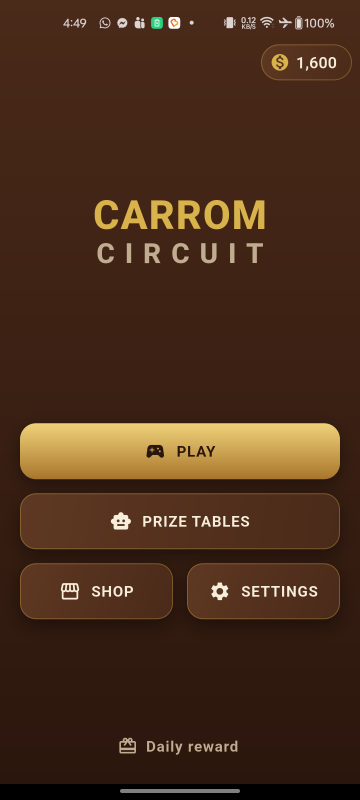
CarromButton widget.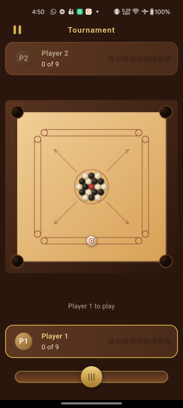
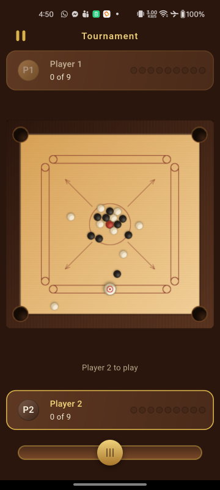
flipBoardForSecondSeat, on by default).What is included
- Realistic, deterministic carrom physics written from scratch in pure Dart
- Tournament — white vs black, queen and cover, full foul handling
- Scramble — a points race where any coin scores
- Pass & Play for two players on a single device
- Solo Match against the robot, with Easy, Medium and Hard opponents
- Prize Tables — a 12-table ladder played for virtual coins, with a matchmaking screen
- Virtual coin economy: daily rewards, rewarded-video coins, win and loss settlement
- Cosmetic equipment shop: strikers, boards and coin sets
- Google AdMob interstitial and rewarded video, frequency capped
- Sound effects, haptics, settings and a polished menu flow
- Thirteen languages, fully translated and included in the item — English, Bangla, Arabic, Hindi, Russian, Turkish, German, Chinese, Amharic, French, Greek, Spanish and Brazilian Portuguese, with right-to-left layout for Arabic. Nothing to buy and nobody to hire: see Languages.
What is not included
Online multiplayer, user accounts, leaderboards, in-app purchases, chat, and any form of real-money play are deliberately out of scope. The coin economy is virtual only — coins cannot be bought, cashed out or transferred.
Third-party services are not included in your purchase. Any cost, account, approval or policy obligation attached to a service outside this codebase is yours, and none of it is covered by the price of the item:
- Google AdMob — real ads need your own AdMob account and your own ad unit IDs. Account approval, ad revenue, payment thresholds, policy compliance and any account suspension are between you and Google. See AdMob setup.
- Google Play — publishing needs your own Play developer account, which carries a registration fee payable to Google.
- Apple — an iOS release needs your own Apple Developer Program membership, an annual fee, and a Mac to build on. See iOS release build.
- Privacy policy hosting — both stores require a publicly reachable URL, and arranging it is yours. See Your privacy policy.
The game itself has no server, no subscription and no running cost of its own. If you would rather ship
without advertising, it reaches the game in only two screens —
lib/features/game/match_stakes.dart and
lib/features/daily_reward/daily_reward_screen.dart.
The robot opponent runs the same physics engine the player does, searching hundreds of candidate shots per turn in a background isolate. There is no scripted cheating, and no network call is ever made during a match.
Quick start
What you need before you begin
This is a Flutter project, so it is built from a terminal rather than from an installer. You do not need to write any Dart to publish the game as your own — every step below is editing a value or running a command — but you do need to be comfortable running commands, and you need these four things installed first:
| What | Version | Why |
|---|---|---|
| Flutter SDK, stable channel | 3.41.6 or newer | Builds and runs the whole project. Installing it also installs Dart, so Dart is not a separate download. |
| Dart | 3.11.4 or newer | Arrives with the Flutter SDK. The project will refuse to build on anything older. |
| Android Studio | Current | The easiest way to get the Android SDK, platform 36 and the build tools. You can edit the code in any editor you like. |
| JDK | 17 | Required by the Android Gradle build. Android Studio bundles a suitable one. |
For an Android release you need nothing else. Publishing to the iPhone App Store additionally requires a Mac running Xcode 15 or newer with CocoaPods, because Apple does not allow iOS apps to be built on any other operating system. The full table of versions, including the Android NDK note, is under Requirements.
How long this takes. If Flutter is already set up and healthy, the six steps
below are an afternoon, and most of that is creating your store accounts rather than touching the
project. If you have never installed Flutter before, allow a few hours for the toolchain on its
own and work through
Flutter’s own install guide before
you open this archive. Running flutter doctor -v and getting a clean report is the
point at which you are ready to start.
You will also need a Google Play developer account (a one-off fee), an AdMob account if you want the advertising to earn anything, and somewhere to host a privacy policy page. None of those are included with this item — see Store checklist for the full list.
Six steps to make it yours
Six steps from the unzipped archive to a build you can upload to a store under your own name. Each step links to the section with the detail, but the list stands on its own — nothing else in the project has to be touched to publish the game as yours.
- Install it and run it. With the Flutter SDK on your machine, from the project
folder:
The game builds and opens on any connected device or emulator, fully playable, with no account, key or configuration of any kind. See Requirements and Installation.flutter pub get flutter run - Rename the app. Three files carry the display name:
android:labelinandroid/app/src/main/AndroidManifest.xml,CFBundleDisplayNameinios/Runner/Info.plist, and the title and names inweb/index.htmlandweb/manifest.json. See Rebranding. - Change the application ID. The project ships as
com.carromcircuit. Inandroid/app/build.gradle.ktschange bothnamespaceandapplicationId, moveandroid/app/src/main/kotlin/com/carromcircuit/MainActivity.ktinto a folder path that matches your new ID, update itspackageline, and set the bundle identifier for iOS in Xcode. Neither store lets you change this after the first upload, so choose it before you publish rather than after. - Replace the launcher icon. Either drop your own artwork over the generated
files, or edit the colours at the top of
tool/generate_app_icons.pyand re-run it:
It writes every Android, iOS and web size from one drawing, including the Android adaptive layers and the Android 13 themed icon. See Rebranding.python3 tool/generate_app_icons.py - Put in your own AdMob IDs. The item ships with Google's public test IDs, so
advertising works immediately and earns nobody anything. Replace the application ID in the
Android manifest and the iOS
Info.plist, replace the unit IDs inlib/services/ad_ids.dart, and setkReleaseAds = true. All of it is one short file and two lines of XML. See AdMob setup. - Build a release. Create a signing key, fill in
android/key.propertiesfrom the supplied example, then:
That is the file you upload to Google Play. See Android release build, and Store checklist for what else the store asks for.flutter build appbundle --release
Everything past those six steps is optional. The rules, the economy, the shop, the robot opponent and all thirteen languages work exactly as shipped, with no configuration at all. The rest of this document is there for when you want to change how something behaves.
Requirements
| Tool | Version | Notes |
|---|---|---|
| Flutter SDK | 3.41.6 or newer (stable channel) | Dart 3.11.4 or newer |
| JDK | 17 | Required by the Android Gradle configuration |
| Android SDK | Platform 36 / build-tools 36 | Installed through Android Studio |
| Android NDK | 29.0.13599879 | See the note below if you have a different one |
| Xcode | 15 or newer | macOS only, for the iOS build |
| CocoaPods | 1.13 or newer | macOS only |
| iOS deployment target | 13.0 | Pinned in ios/Podfile |
Confirm your toolchain is healthy before you start:
flutter doctor -vThe Android SDK levels are pinned explicitly, in
android/app/build.gradle.kts: compileSdk = 36, minSdk = 24 and
targetSdk = 36. They are deliberately not flutter.compileSdkVersion and friends,
which resolve from whichever Flutter SDK is installed — so two machines could otherwise build this project
against two different Android SDKs without either of them saying so. The pinned values are what the Flutter
SDK this was built against resolves to, so nothing about the shipped APK changes.
minSdk = 24 is Android 7.0 and is the floor google_mobile_ads requires;
lowering it will not build. Raise targetSdk as Google Play's yearly requirement moves, and
test on a device when you do — a new target opts the app into that Android release's behaviour changes.
About the NDK version. The same file pins
ndkVersion = "29.0.13599879". Nothing here ships native code and no plugin needs the NDK to
build, so any version you have will do. If Gradle reports that this NDK is missing, either install that
version from Android Studio (Settings → Languages & Frameworks → Android SDK → SDK
Tools → NDK (Side by side)), or change the line to a version you already have, or replace it with
ndkVersion = flutter.ndkVersion to use whichever version your Flutter release expects.
Installation
- Unzip the item archive and open the project folder in your editor (VS Code or Android Studio).
- Fetch the Dart packages:
flutter pub get - On macOS, if you intend to build for iOS, install the native pods:
cd ios && pod install --repo-update && cd ..--repo-updatematters on a machine whose CocoaPods spec repository is out of date, which otherwise fails with "specs repository is too out-of-date to satisfy dependencies". - Check that everything compiles cleanly:
flutter analyze flutter test
Both commands should finish with no issues reported. If they do not, see Troubleshooting.
Keeping the dependencies up to date
The versions in pubspec.yaml are the ones this release was built and tested against
together. They are not frozen, and an app you intend to maintain for years should not stay on them
forever — but upgrade deliberately rather than all at once:
- See what has moved.
The Resolvable column is what you can take without editingflutter pub outdatedpubspec.yaml; Latest is what exists, and reaching it may mean a major version with breaking changes. - Take the safe ones first.
This stays inside the constraints already written influtter pub upgradepubspec.yaml, so it picks up patch and minor releases only. This is the upgrade worth doing routinely. - Then the major ones, one at a time.
Prefer editing one constraint by hand, re-running, and testing, over taking every major bump in a single step — when something breaks you want to know which package did it. Read the package's changelog on pub.dev first.flutter pub upgrade --major-versions - Prove it still works, every time, before you commit:
The test suite is the real safety net here: the physics, the rules engines, the AI and the economy are covered by unit tests that do not need a device, so a dependency that changes behaviour tends to show up as a failing test rather than as a bug a player finds.flutter analyze flutter test
Three things specific to this project that are worth knowing before you upgrade:
flutter_riverpodis held at^3.3.2on purpose. Newer releases have required a newer Dart SDK than the one this was built against. Upgrading Flutter first, then Riverpod, is the order that works.intlis declared asany, which is deliberate.flutter_localizationspins it from the SDK to one exact version, and declaring a range of our own would only produce a conflict the next time you upgrade Flutter.- A major
google_mobile_adsupgrade is rarely only a version bump. It tends to come with a minimum Android SDK or iOS deployment target, and sometimes a manifest orPodfilechange. Read its changelog, then re-run the app on a real device and confirm an ad still loads — an ads SDK that fails quietly looks exactly like an empty network.
After any upgrade that touches iOS, re-run cd ios && pod install and commit the
updated Podfile.lock along with pubspec.lock, so your own builds stay
reproducible.
Running the app
Connect a device or start an emulator, then:
flutter devices # confirm your device is visible
flutter run # debug build
flutter run --release # full-speed build, use this to judge game feelThe menus are three screens deep at most. Home leads to mode select; the two modes that need a second question — Pass & Play and Solo Match — ask it in a sheet rather than on a screen of their own.
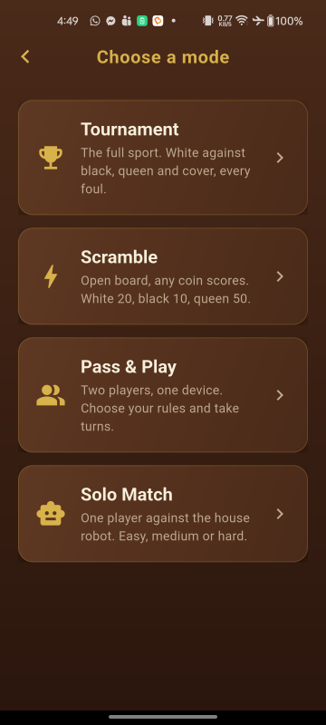
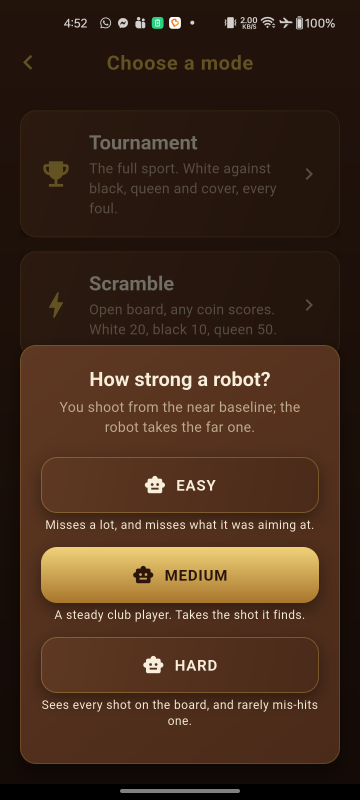
Always judge physics and animation on a release build on a real device. Debug builds run the Dart VM without optimisation and will feel noticeably slower.
Project structure
The code is split so that all game logic is plain Dart with no Flutter or Flame imports. That keeps it unit testable and lets the robot opponent run the exact same rules and physics the player does.
lib/
├── main.dart app entry point, portrait lock
├── app/ MaterialApp, theme, routes
├── core/ PURE DART — no Flutter or Flame imports
│ ├── physics/ vectors, bodies, the deterministic world
│ ├── rules/ game state, Tournament and Scramble rule engines
│ ├── ai/ shot generation, simulation, scoring, difficulty
│ └── economy/ wallet, prize tables, daily reward, shop catalogue
├── game/ Flame layer
│ ├── config/ physics and board constants — tune here
│ ├── skins/ the colours of each board, striker and coin set
│ ├── components/ board, coins, striker, aim guide, effects
│ ├── input/ striker placement and pull-to-aim
│ └── overlays/ HUD, pause and result screens
├── features/ home, mode select, prize tables, shop, settings
├── services/ storage, audio, ads, haptics
└── shared/ reusable widgets and helpers
assets/ images, audio and fonts
docs/ this documentation
test/ unit tests for physics, rules, AI and economy
tool/ the launcher-icon generatorWhere the conventional Flutter folders are
This project groups code by layer rather than by widget type, because the game logic has to stay free of Flutter imports — that is what lets the robot opponent run the real rules and the real physics inside a background isolate, and what makes all of it unit testable. If you are looking for the folders a Flutter project more usually has:
| Looking for | It is here |
|---|---|
| models / entities | lib/core/ — rules/, economy/ and
physics/ hold the plain-Dart value types |
| screens / pages | lib/features/, one folder per screen |
| widgets | lib/shared/widgets/ for the reusable ones; a screen's own widgets sit beside it,
and the in-game overlays are in lib/game/overlays/ |
| providers / state management | lib/services/ — one Riverpod notifier per feature, beside the storage it
reads |
| utils / helpers | lib/shared/utils/ |
| constants you are meant to tune | lib/game/config/ |
State is managed with Riverpod, so nothing is
passed down through widget trees by hand. Lists and grids that can grow are built lazily: the avatar
picker's forty-nine tiles use GridView.builder, the twelve prize tables use
PageView.builder, and the mode list uses ListView.separated. The settings,
shop and daily-reward pages use a plain ListView, which is what Flutter recommends for a
short and fixed set of children — those pages have a handful each, and a builder there would cost
more than it saves.
Code quality gates
The project analyses more strictly than the Flutter defaults: implicit downcasts, inference that falls back
to dynamic and raw generic types are all rejected, and a further set of lints is enabled in
analysis_options.yaml. Both commands below should be clean before you ship a change:
flutter analyze
flutter testOne test is structural rather than behavioural: test/core_purity_test.dart fails if anything
under lib/core/ imports Flutter, Flame or dart:ui. That boundary is what allows the
rules and physics to run inside a background isolate for the robot's shot search, so it is worth keeping
intact if you extend the game logic.
The physics engine's tests are mutation-verified. A deliberate fault is introduced into the engine one at a time — a sign flipped, a guard removed, a threshold moved — and the suite has to notice every one. That is a stronger claim than a passing suite: a green run proves the tests executed, not that they would catch a break. Three hundred mutations, all caught.
Mutation testing is how several of the rules documented here were found to be untested despite a green
suite, and it is worth knowing about if you change the engine: a passing suite after a physics change
does not mean the change is safe, only that nothing already asserted broke. If you alter
lib/core/physics/ or lib/core/rules/, add a test that fails before your change and
passes after it — that is the discipline the engine was built with, and the reason its behaviour is
reproducible.
Two structural tests enforce boundaries rather than behaviour, and both are worth keeping intact:
test/core_purity_test.dart, described above, and the determinism tests in
test/physics/, which assert that the same shot produces byte-identical output. The robot's shot
search depends on that: it replays thousands of candidate shots through the same engine, so a
non-deterministic change would make the AI's choices unrepeatable as well as untestable.
Never run two at once, and never run --check beside a full sweep: a sweep keeps one file
mutated while the suite runs, so anything else reading the source at that moment sees the mutated copy and
reports patterns as stale when they are not.
The source is formatted with dart format, so dart format lib test should report
nothing changed. Run it before committing rather than after, for the reason above.
Every mutation should be reported as caught. One reported as a gap means the suite would not
have noticed that rule breaking — useful to run after you change the engine, and a good way to confirm your
own additions are actually covered.
Rebranding
Four things carry the default branding: the display name, the application ID, the launcher icon and the colour palette.
1. App display name
| Platform | File | What to change |
|---|---|---|
| Android | android/app/src/main/AndroidManifest.xml | android:label="Carrom Circuit" |
| iOS | ios/Runner/Info.plist | CFBundleDisplayName |
| Web | web/index.html, web/manifest.json | title, name, short_name |
2. Application ID / bundle identifier
The project ships as com.carromcircuit. Replace it with your own identifier before
publishing — both stores require at least two dot-separated segments, each starting with a letter.
- In
android/app/build.gradle.kts, change bothnamespaceandapplicationId. - Move
android/app/src/main/kotlin/com/carromcircuit/MainActivity.ktinto a folder path matching your new ID, and update itspackageline to match. Kotlin requires the folder path to mirror the package, so these two always move together. - In Xcode, open
ios/Runner.xcworkspaceand set Bundle Identifier on the Runner target (or search and replacePRODUCT_BUNDLE_IDENTIFIERinios/Runner.xcodeproj/project.pbxproj). - Run
flutter cleanand rebuild. - Run
flutter test test/app/package_id_test.dart. It checks that all five places the identifier is written out agree, which is worth having because only two of them complain on their own: Gradle and Xcode never read each other, so a half-finished rename ships to the two stores under two different identities.
Once an app is live on a store its application ID can never be changed. Decide on the final identifier before your first upload.
3. Launcher icon
There are two sets of icons on Android, and replacing only the first is the usual mistake.
| Files | Used by |
|---|---|
android/app/src/main/res/mipmap-*/ic_launcher.png | Android 7 and older, and the launch screen, which centres this bitmap on the wood |
android/app/src/main/res/mipmap-*/ic_launcher_background.png…/ic_launcher_foreground.png…/ic_launcher_monochrome.pngdescribed by mipmap-anydpi-v26/ic_launcher.xml | Android 8 and newer, which is to say every current device |
ios/Runner/Assets.xcassets/AppIcon.appiconset/ | iOS |
web/icons/, web/favicon.png | the web build |
An adaptive icon is a 108dp drawable and the launcher chooses the mask, so as little as the centre 66dp is guaranteed to survive. Keep anything your icon cannot afford to lose inside that circle — 33dp of radius out of 108, or about 56% of the width. Art outside it looks perfect on a launcher with a square mask and has its corners sliced off on a round one. The background layer must be fully opaque to its own edge, or the system composites it onto black.
The project includes a dependency-free generator that produces every file above, including the adaptive layers at every density:
python3 tool/generate_app_icons.pyIt needs only Python 3 — no extra libraries. Edit the colour and layout constants at the top of the script if you would rather generate a recoloured variant than draw your own; the foreground's scale is derived from the board geometry, so it stays inside the safe circle as you move things.
If you replace the art by hand, flutter test test/app/launcher_icon_test.dart checks the
properties above against your own files: the layers exist at every density and are the right size, the
foreground stays inside the safe circle without being needlessly small, the background is opaque, and the
themed layer is a silhouette rather than a copy of the picture.
4. Colours and fonts
The palette and text styles are defined in lib/app/theme.dart. Every colour in the interface
comes from the CarromColors constants and the CarromGradients built from them, so
changing those values reskins the whole app. CarromMetrics holds the shared corner radii and
spacing.
The app ships with no bundled fonts and uses the platform's default typeface, which
keeps the download small and renders every script the device itself supports. assets/fonts/ is
there and empty for you. To bundle your own, drop the font files in, declare the family in the
flutter: fonts: section of pubspec.yaml, and set fontFamily on the
ThemeData returned by CarromTheme.build() — that one method is the only place the
typeface is decided. Check the licence first: a font redistributed inside a sold item needs one that permits
it, such as the SIL Open Font License or Apache 2.0.
5. Orientation
The game is locked to portrait in three places. Change all three if you need a different orientation:
lib/main.dart—SystemChrome.setPreferredOrientationsandroid/app/src/main/AndroidManifest.xml—android:screenOrientationios/Runner/Info.plist—UISupportedInterfaceOrientations
Gameplay settings
All gameplay numbers are collected in configuration files rather than scattered through the code, so you can tune the game without touching logic.
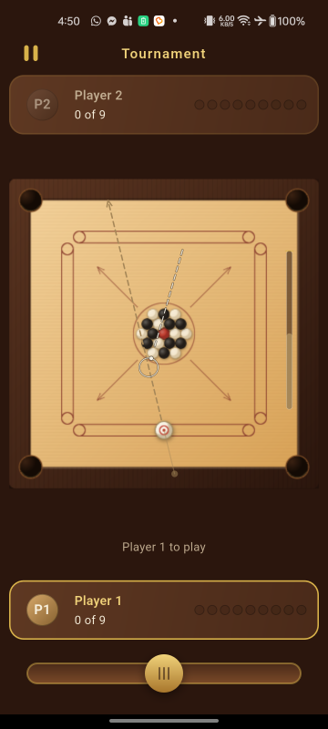
How the board is drawn
The board is painted with Canvas rather than loaded from an image, in
lib/game/components/board_component.dart. Frame, surface, pockets, baselines, centre circles and
arrows each have their own method, so a change stays local: edit _paintSurface to restyle the
playing area, _paintPockets to restyle the holes, and so on. Replacing the whole look with your
own artwork means replacing that one component.
Everything is expressed in board units and the camera is fixed to show exactly the board, so nothing in the game layer does screen-pixel arithmetic. That is why the board fits every screen size without breakpoints.
The board and the pieces are drawn once, not every frame. Neither picture changes while a
match is played — the board is fixed and a coin only moves — so each is rasterised into an image by
lib/game/paint_cache.dart and blitted from then on, at the scale the screen is actually drawing at.
Profiling on a device put the saving at roughly 2 ms of GPU time per frame. You edit the painting methods
exactly as before and the cache picks the change up; it rasterises your code rather than a copy of it. The one
thing to know: anything drawn outside the cached box is cut off. The box is the board plus
_shadowSpill in board_component.dart, and a piece's radius times
kPieceSpill in piece_painter.dart, both sized for the blurred shadows that already
spill past their shapes. If you add a glow or a larger shadow, widen the matching constant.
The coins and the striker are drawn by coin_component.dart and striker_component.dart,
which share one paintPiece helper so every piece catches the light from the same direction. Neither
component stores a position: each reads it from its body in the physics world every frame, so what you see can
never disagree with what the engine is simulating.
The opening arrangement is built by lib/core/physics/formation.dart — queen on the centre spot,
six coins touching her, twelve packed around those on a hexagonal lattice. Change the lattice there if you want
a different starting layout; the colours alternate automatically.
Board dimensions
lib/game/config/board_config.dart. The board is modelled in logical units where one unit is
one millimetre of a real carrom board: a 740 × 740 playing surface, 30 pocket radius, 15.5 coin
radius and 26 striker radius. The Flame layer scales these to fit any screen, so changing them changes
proportions, not the fit.
The pocket is deliberately larger than a real board’s, which is about 22.25 units by this scale and is where this project started. It was raised to 30 because the game was measured as too hard to score in: on a scattered board a perfectly aimed shot dropped only 46.7% of the time at the old size, against 66.7% at this one. The gain flattens above this — 27 already reaches 63.3% — so there is little left to buy by going further.
The striker is deliberately larger than a real one too — 26 against about 20.5 by
this scale — and the two numbers belong together. At 20.5 the 30-unit pocket swallowed the striker about
four times as often as the original board did (2.7% of shots across a sweep of every spot, angle and
power, against 0.7%), which is a foul the player did not earn. Widening the striker brings that to 1.3%
and, pleasingly, costs nothing in scoring: a bigger striker is a bigger hammer and finds the coin it is
aimed at slightly more often. It must stay below kPocketRadius; a striker
too fat for the hole could never be pocketed, and the Section 7.2 striker foul is a rule of the game.
A sweep in test/physics/shot_feel_test.dart guards both ends of that.
Two things move with kPocketRadius besides the capture circle, which is why it is worth
changing only here. BoardGeometry.hasCushionAt opens a gap of exactly this radius at each end of
every cushion, and BoardComponent draws the holes at this size — so the holes on screen and the
holes the physics uses cannot disagree. The two stay consistent at any value: a body inside the cushion gap is
by definition within the capture circle by the time it reaches the wall plane, so widening the gap can never
let a coin leave the board. A test in test/physics/shot_feel_test.dart pins the easing as a
consequence rather than as a number, by firing a shot that misses the hole’s centre line by 26 units — more
than the old radius, less than this one — and requiring it to drop.
Physics feel
Every physics constant lives in lib/game/config/physics_config.dart, as a single
kCarromPhysics object handed to the engine. The engine itself holds no numbers, so this file is
the only place to tune the game's feel. The values most worth experimenting with:
| Constant | Default | Effect of raising it |
|---|---|---|
| Min striker speed | 470 units/s | A firmer gentlest shot; see the note below |
| Max striker speed | 2200 units/s | Harder shots at 100% power |
| Rolling friction | 600 units/s² | Coins stop sooner; a slower, heavier feel |
| Coin–coin restitution | 0.92 | Livelier, more energetic collisions |
| Coin–wall restitution | 0.75 | Stronger rebounds off the cushions |
| Pocket capture speed | 1800 | Fewer coins rattle out of pockets |
| Striker mass | 1.6 | Coins are the reference at 1.0; a heavier striker shifts coins further |
The two striker speeds are the ends of the power meter, and the pair matters more than either on its
own. Pull-back maps onto the range between them, not up from zero: a shot at 0% power leaves at
minStrikerSpeed and one at 100% at maxStrikerSpeed. That floor is not decoration.
Distance travelled goes as the square of speed, so with a map that started at zero the weakest shots
could not carry the striker as far as the pack — the bottom fifth of the meter wasted a turn, and taming
the top end made the dead band larger rather than smaller. If you raise maxStrikerSpeed, check
that full power still looks like a break rather than a pinball table; if you lower
minStrikerSpeed, check that the softest shot still reaches the coins. The test group in
test/physics/shot_feel_test.dart checks both for you.
Pocket capture is worth understanding before you change it. A coin reaching a pocket below
pocketCaptureSpeed drops in; a faster one skips across the hole, strikes the far lip and stays in
play. Raising the value makes hard shots at the corners more reliable and the game easier; lowering it makes
power risky and rewards touch. It is one of the few numbers here that changes how the game plays
rather than how it feels.
Three further constants control the simulation rather than the feel, and are better left alone unless you
know why you are changing them: fixedTimeStep (1/120 s), maxSubSteps (4) and
maxSubStepTravelRatio (0.5). Together they decide how finely a fast shot is subdivided. A striker
at full power crosses about 20 units per step, more than a coin's radius, so without sub-stepping it could
pass straight through a coin.
The physics engine is deterministic by design — identical input always produces an identical result,
which is what lets the robot simulate shots accurately. The opponent plays by copying the board, running
simulateUntilRest on hundreds of candidate shots, and choosing one; the real board then has to
reproduce that shot exactly. Never introduce randomness or frame-time dependence into the physics step, or
the opponent's chosen shot will stop matching what the player sees.
Striker placement
Where the striker may sit is decided by BaselinePlacement in
lib/core/rules/striker_placement.dart: the baseline span, the conversion between the slide bar's
position and a point on the board, and whether a spot is clear of every coin. The robot uses the same class,
so it can never aim from a spot a player could not have used.
A spot that overlaps a coin is shown in red rather than being corrected, because the player chose it. If you
would rather the striker snapped to the closest legal spot instead, call nearestClearFraction and
use what it returns.
How a shot feels
The shot gesture is tuned in lib/game/config/input_config.dart:
| Constant | Default | Effect of raising it |
|---|---|---|
kFullPowerPull | 260 | A longer drag is needed for a hard shot, so aiming is finer but more effort |
kCancelPull | 26 | More forgiving about abandoning a shot, but very gentle taps become impossible |
kAimLineLength | 760 | A longer aim line, at every power, and a guide that marks a coin further ahead |
Pull-back maps onto the striker's speed through PhysicsConfig.shotSpeed, evenly across the
range between minStrikerSpeed and maxStrikerSpeed rather than up from zero. The
distance a player feels in their thumb matches the speed they see on the board. Shortening
kFullPowerPull makes the game feel twitchier, lengthening it makes fine shots easier and hard
shots a stretch — on a small phone that trade-off is worth testing in your own hands before changing
it.
The aim line does not work that way: it is kAimLineLength long whatever the power.
It also sets how far ahead the aim guide looks, so raising it is not purely cosmetic once the guide is
switched on. The line answers “where am I pointing”, and that question has the same answer however hard the
shot is going to be — tying its length to power put the guide at its shortest for exactly the delicate
shots that need it most. How hard the shot will be is said twice over already, by the colour of the line and
by the meter beside the board, and neither of those costs a player their aim to read. The line is then clipped
at the cushion it points at, so it never paints across the frame and its tip always marks the wall the striker
is aimed at. Covered by test/game/aim_line_test.dart.
Rules and turn timer
lib/core/rules/ holds a RulesConfig object with the variant toggles: whether the
queen may only be pocketed after one of your own coins, whether failing to touch any coin is a foul, the
turn timer length (20 seconds by default) and the Scramble point values.
Every rule in this folder is written against one object, ShotResult, rather than against the
board or the physics engine. A shot produces one: what fell and in what order, whether the striker went down,
and which coin the striker touched first — a cushion first does not count, because a rebound shot is
legal. The game builds one the moment the board stops moving and hands it to the rules engine.
The Tournament engine lives in lib/core/rules/tournament_rules.dart and the toggles it reads
are in RulesConfig:
| Toggle | Default | What it changes |
|---|---|---|
queenRequiresOwnCoinFirst | true | Off, and the queen may be taken at any time |
noCoinTouchedIsFoul | false | On, and a shot that reaches no coin ends the turn |
turnTimed | true | Off, and strokes are not timed at all |
turnSeconds | 20 | How long a player has to shoot, when turnTimed |
coinsPerPlayer | 9 | How many coins a seat must bank to win |
Four points in Section 7.2 of the project spec can be read two ways, and the engine settles each one. Written out because houses genuinely differ, and because each is a one-line change:
- Needing a coin of your own before the queen means before that shot — your first coin and the queen in a single stroke is too early.
- Taking the queen keeps the table, so the cover can be made on the very next stroke.
- Taking the queen too early is not itself turn-ending; she simply goes back to the centre.
- Your last coin comes back if the queen is unsettled, whether she is on the board or waiting to be covered.
Each has a test whose name begins INTERPRETATION: in
test/rules/tournament_rules_test.dart, so you can find and change any of them quickly.
The Scramble engine is beside it in lib/core/rules/scramble_rules.dart. Nobody owns a colour
there: any coin can be pocketed by either player and scores for whoever sank it, so the game is a points race
that ends when the board is clear. Its four values are also in RulesConfig:
| Value | Default | What it changes |
|---|---|---|
scrambleWhitePoints | 20 | Points for a white coin |
scrambleBlackPoints | 10 | Points for a black coin |
scrambleQueenPoints | 50 | Points for the queen, paid only once she is covered |
scrambleStrikerPenalty | 10 | Points lost for pocketing the striker, never below zero |
Scramble's spec is shorter and leaves more unsaid, so it settles four readings of its own, each again a
one-line change with a matching INTERPRETATION: test in
test/rules/scramble_rules_test.dart:
- The queen may be taken at any time —
queenRequiresOwnCoinFirstis a Tournament toggle and Scramble does not read it. Only the cover holds her. - Any coin covers her, either colour; but only the player who sank her can cover her, so she can sit unsettled while the opponent shoots.
- Taking the queen keeps the table, so the cover can be made on the very next stroke.
- The cover is waived once no coins are left on the board. Without that the game cannot end: she needs a coin to settle, none remains, and she would return to the board to be pocketed again forever.
A level score is a draw — GameState.isDraw — rather than a sudden-death round,
which the spec makes optional.
Turns, the clock and the HUD
One game is a Match (lib/core/rules/match.dart): the mode, the rules engine it
builds, the board as the rules see it, and the turn clock. It is the single authority on whose turn it is
— the board follows it, never the other way round — so a whole game can be played out in a test
with no screen and no physics. GameMode.tournament and GameMode.scramble each build
their own engine and pass your RulesConfig straight through.
The clock is TurnTimer, driven by the game loop rather than by a wall clock. It is held while a
shot is playing out, because a player is timed on deciding and aiming, not on watching the coins run, and every
stroke gets a fresh allowance — including the next one in a visit the player has kept, since holding one
clock across a run of pocketed coins would punish them for shooting well. Change
RulesConfig.turnSeconds for the length and TurnTimer.urgentSeconds for how long the
final warning lasts; the ring around the active avatar follows both.
A match can also have no clock at all, which the player controls from the Turn timer
switch in Settings and which RulesConfig.turnTimed sets. An untimed match has
Match.timer == null rather than a timer nobody starts — so there is nothing to read a time
out of, no ring is drawn round the active avatar, and the pause panel does not claim to have stopped a clock.
If you build a screen that reads the clock, ask Match.isTimed first.
Both engines return instructions rather than positions: a TurnOutcome says only that a
coin must come back, never which one or where. CentrePlacement
(lib/core/rules/centre_placement.dart) is the other half, and it answers the Section 7.2 phrase
"the centre, or the nearest free spot" by ringing outwards from the centre spot until it finds room that is on
the surface, clear of every coin and off the pocket mouths. The robot will use the same code, because a
candidate shot has to be simulated from the position a returned coin would really take.
The HUD is Flutter widgets, not Flame components: a panel at each end of the screen so each seat's own
information is nearest them. HudPanel watches HudViews — three notifiers rather
than one, because the state changes once a stroke, the clock every frame and the input gate twice a stroke, and
bundling them would repaint both panels sixty times a second to animate one ring. Tournament gives each seat a
tray of its own colour, as a real board does; Scramble has a single shared tray of what has come off the board,
because nobody owns a colour there and a tray beside a Scramble player would claim an ownership the rules do
not recognise. Avatars are Canvas-drawn
(lib/shared/widgets/player_avatar.dart): either initials on a coloured disc, which is what the
sixteen robot avatars of the matchmaking screen use, or one of the forty-eight drawn symbols a player can
choose for themselves. See the player's name and avatar.
Modes, seats and Pass & Play
The four modes of the item description are really two axes. Tournament and Scramble name the
rules; Pass & Play and Solo Match name the opponent. MatchSetup
(lib/core/rules/match_setup.dart) carries one of each, so every combination is playable and the
robot does not need a fifth and sixth mode invented for it. It is what the board takes as its
Routes.game route argument:
Navigator.pushNamed(
context,
Routes.game,
arguments: const MatchSetup(rules: GameMode.scramble),
);Pushing the route without an argument falls back to two players at a Tournament board. On the mode-select screen, Tournament and Scramble go straight in; the Pass & Play card asks which rules first.
In a two-player game the whole board turns half a turn for the second seat, and the two player panels swap with it, so whoever is holding the phone always shoots from the bottom of the screen with the slide bar directly below their own baseline. A brief "Player 2's turn" notice fades in and out over the board as the table passes; the turn clock keeps running underneath it, so nothing a player has to tap costs them their own time.
The turn is done in the Flutter layer with AnimatedRotation, not by rotating Flame's camera. A
Transform transforms hit tests as well as painting, so the catapult pull keeps meaning what the
player sees it mean with no coordinate arithmetic anywhere: pulling down the screen still fires up the screen
even though "down the screen" is now "up the board". The one thing that does need converting is the slide bar,
which sits outside the rotated board — barFraction in
lib/game/input/bar_mapping.dart mirrors it, so the knob always follows the thumb.
Turning the board never happens against the robot, which is not holding anything, and a player can switch it off in Settings if they play with the phone flat between them.
This matters if you write your own variant. Because a rule only ever reads a ShotResult, you
can test one without a physics world, and the robot scores a candidate shot with the same code that scores a
real one — so the opponent can never play by rules the player is not held to. Build a
ShotResult by hand in a test and assert what your rule does with it; see
test/rules/shot_result_test.dart.
The robot's shot search
The robot plays by searching, not by rules of thumb. It generates shots that are aimed at a particular coin towards a particular pocket, plays each one out on a private copy of the board using the same physics engine the player's shots use, hands the result to the same rules engine, scores it and ranks the lot. Two consequences worth knowing before you change anything: the opponent can never play by rules the player is not held to, and because the engine is deterministic the shot it picks plays out on screen exactly as it did in the search.
Everything is pure Dart in lib/core/ai/, so you can test it without a screen:
| File | What it is |
|---|---|
shot_candidate.dart | One shot: a spot on the baseline, an angle, a power. The only shot value object in the project. |
aim_geometry.dart | The arithmetic. Where the striker must be at contact to send a coin to a pocket, whether a path is clear, and where to strike a cushion for a rebound. |
candidate_generator.dart | Finds the aims on a board, prunes the hopeless ones and expands the rest into shots at each power. |
shot_simulator.dart | Plays a candidate out to a standstill on a copy of the board, reusing one world so the search is affordable. |
shot_evaluator.dart | Turns a finished shot into a number, one implementation per mode. |
shot_search.dart | Ties it together and ranks the results.
ShotSearch.inBackground runs the whole thing on a background isolate so the board keeps its
frame rate while the robot thinks. |
There are two things to tune, and they are independent. How wide the robot looks is
CandidatePlan in lib/core/ai/candidate_plan.dart: spots along the baseline, power
levels, the spread either side of a dead-on aim, and how many aims survive pruning. What the robot
thinks a shot is worth is AiWeights in lib/core/ai/ai_weights.dart: a coin,
the queen, the cover, the striker foul, an opponent coin, and how much it cares about leaving coins near
pockets. A robot that gambles the striker too readily or chases the queen too hard is tuned there, not in the
search.
One number in the generator is worth explaining, because it looks like a bug and is not. A path counts as
clear when an obstacle leaves 0.7 of the room the moving body really needs, rather than all of it
(CandidatePlan.grazeClearance). Carrom is played on a packed board: nineteen coins start out
touching, a coin leaving a cluster shoves its neighbours aside, and the striker cannot reach a coin in a
cluster without grazing the ones beside it. Insisting on the full clearance rejects every shot there is. The
error is deliberately on the permissive side — a shot that will not work is thrown out by the simulator a
millisecond later, whereas a shot wrongly refused is never tried at all.
Robot difficulty
lib/core/ai/difficulty.dart holds the table and
lib/core/ai/robot_player.dart plays to it. A difficulty is three separate ways to
be weak, and they give the robot quite different characters:
| Difficulty | Candidates | Picks from | Angle noise | Power noise |
|---|---|---|---|---|
| Easy | ~150 | top 40% | ±4° | ±15% |
| Medium | ~400 | top 10% | ±1.8° | ±8% |
| Hard | ~900 | the best | ±0.6° | ±3% |
A narrow search means the robot never sees the good shot — the beginner who misses the
rebound. A loose pick means it sees the good shot and plays a worse one — the player with
no judgement. Noise means it picks the right shot and mis-hits it — the player whose
hands are not steady. Easy is weak in all three ways, because a robot weak in only one is recognisably a machine
with a handicap. Each is a separate field on RobotProfile, so you can make an opponent that sees
everything and still fumbles it, or one with a steady hand and no sense.
Each tier's candidate count is the exact product of its own CandidatePlan rather than a quota
applied afterwards, so widening a tier means looking at more aims — which is what actually makes the robot
see more of the board.
The seed
RobotPlayer takes a seed, and never creates one of its own. Everything about a stroke —
which shot it picks, how far it misses, how long it appears to think — is a pure function of the seed, the
stroke number and the search result. The same seed replays the same game, which is what makes a robot's turn
reproducible in a test and in a bug report.
If you add a feature where two devices watch the same game, pass the seed between them and both will see the robot play identically. That only works because each stroke draws from its own generator rather than from one long stream; a stroke can therefore be recomputed on its own, without replaying the ones before it.
Playing the robot
Solo Match asks two questions — which rules, then how strong a robot — and then deals the board. The player shoots from the near baseline and the robot from the far one, as Section 7.1 seats them.
What the player watches is deliberate. The robot slides the striker into the spot it chose
and then pulls back to the power it chose, because a shot that appeared out of nowhere would be
indistinguishable from the game cheating: the slide says where it is shooting from and the pull says how hard,
which is everything you would read from an opponent's hands at a real board. Both are drawn by exactly the code
that draws the player's own shot — AimState.pulled turns a shot back into the drag that would
have produced it — so the two can never show different things.
The timings live in lib/game/config/robot_config.dart: the slide, the pull, and a short beat at
full stretch before it lets go. The thinking pause itself is Section 8's, on RobotProfile.
The search and the thinking pause run together. The robot starts searching the moment the
table passes to it and the pause is measured from that same moment, so a search that takes a second eats into a
pause that was going to be a second and a half rather than adding to it. This matters on a phone, where a Hard
search is the slowest thing the game does. If you widen CandidatePlan past the pause, the robot
simply plays as soon as it is ready.
The robot is not timed. The turn clock is for a person deciding; a robot cannot stall, and a countdown it could lose to its own search would be a foul nobody could have prevented. Its avatar shows a sweep while it is working instead of a ring.
Pausing, the result and a rematch
The pause button is the only way out of a game, so leaving is always deliberate rather than a mis-tap on a
back arrow — the Android back gesture opens the pause menu too. Pausing stops the Flame engine, which
stops the turn clock with it: the clock is only ever advanced from the game's update, so there is
no second thing to remember to pause. The same is true when the player takes a call or switches apps, because
Flame pauses the engine when the app is backgrounded, so nobody loses a turn to a notification.
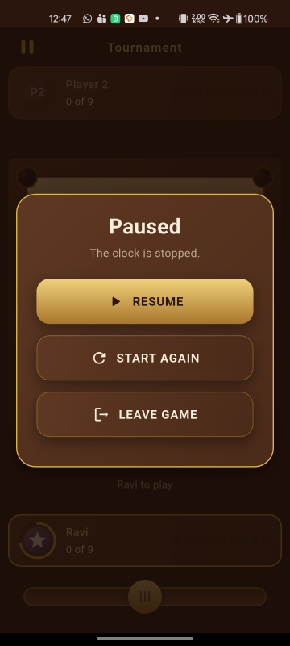
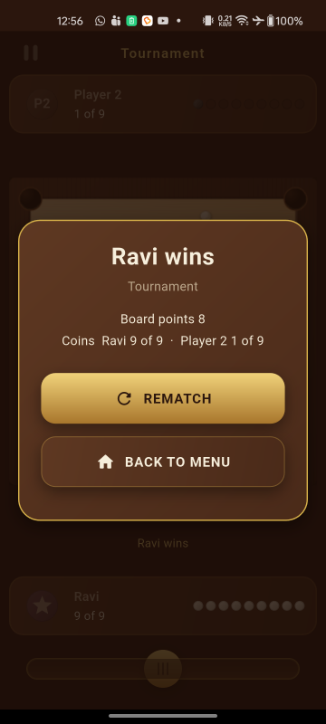
The result panel shows as soon as the rules declare the game over. In Tournament it shows the board points
of the spec — one per coin the loser left, plus three for the queen if the winner covered her, display
only — and in Scramble the two final scores. Both are produced by resultSummary in
lib/game/overlays/result_overlay.dart, a pure function, so the wording and the arithmetic are
tested without building a widget. Rematch lays the board out again from the opening arrangement without
leaving the screen; the pause menu offers the same thing as "Start again".
Every sentence those two show is in one file,
lib/shared/utils/game_strings.dart. resultSummary and
turnMessage decide which line to show and never build one: they are handed a
GameStrings and ask it. If you want "Ana wins" to read differently, or the middle dot between a
foul and the next player to be something else, change it there and both the board and the result panel
follow.
The reason it is shaped that way is translation. Each method returns a whole sentence with its
values as arguments, never a fragment glued to another fragment, because word order is a property of
a language — a line built as '$foul · $name to play' can be translated into English and only
approximated into anything else. test/game/game_strings_test.dart holds every method to the rule
that matters here: whatever values a sentence is given have to appear in what it returns, so a wording that
quietly loses a player's name fails a test. It asserts presence rather than a count, deliberately, because a
language may well mention a number once where English mentions it twice.
Leaving a local game costs nothing, so neither menu warns before it. That changes when the prize tables arrive: an entry fee has been paid by then, and quitting is a loss.
Settings
Settings are a value object in lib/core/settings/game_settings.dart with a JSON round trip,
stored under one key by StorageService and exposed through settingsProvider in
lib/services/settings_provider.dart — the same pattern as the wallet. A damaged entry falls
back to the defaults rather than throwing, so a corrupt preference can never stop the game opening.
Seven settings: the language, turning the board round, Sound, Vibration, the aim guide, the turn timer
and the time allowed for each shot. There is no music toggle, because there is no music track — a stored field
nothing reads is a field that quietly rots, so it goes in when there is something for it to control. Adding
one means a field on GameSettings, a setter on SettingsNotifier and a row on the
settings screen.
The player's name and avatar
The first row of Settings opens a Profile screen
(lib/features/profile/profile_screen.dart) where a player types a name and taps a face. Both are
optional: a player who never opens it is called Player 1 and wears their own initials, which is
exactly what the game showed before the screen existed.
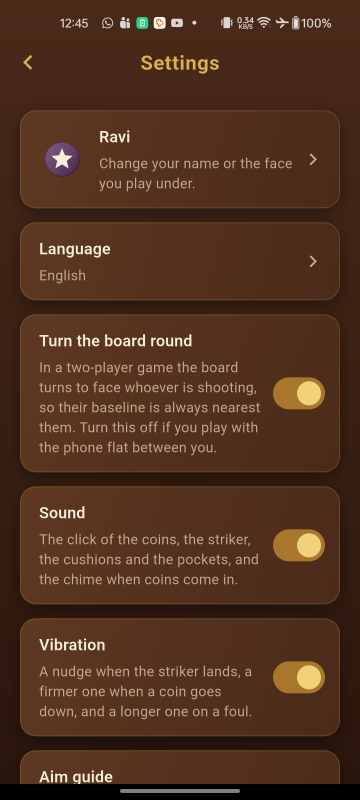
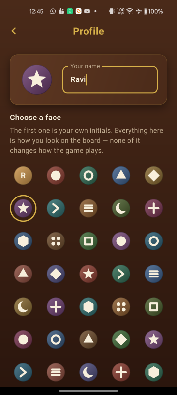
The model is PlayerProfile (lib/core/profile/player_profile.dart) — a name and an
avatar index, stored under the profile key with the same JSON round trip as the wallet. Two
details are worth knowing before you change anything:
- An unset name is the empty string, not
'Player 1'. The display fallback lives in the interface layer askDefaultPlayerName(lib/shared/utils/player_display.dart), becauselib/core/must not hold a user-facing English sentence. Change the name a player is called by default there, in one place. - The name is stored on every keystroke, not on submit. A player who types a name and taps Back has said what they want to be called. Names are trimmed, internal whitespace is collapsed, and the length is capped at 20 code points rather than code units, so an emoji costs one and a surrogate pair is never cut in half.
There are forty-nine avatars: entry 0 is the player's initials, and entries 1 to 48 are a
drawn symbol on a coloured disc. Forty-eight is arithmetic rather than taste. An avatar is a pair taken from
two lists of deliberately different lengths — twelve symbols in AvatarMotif and the sixteen
colours AvatarPalette already had for the robots — so the map from an index to the pair repeats
only after lcm(12, 16) = 48:
// lib/shared/widgets/avatar_catalogue.dart
symbol = m % 12 // AvatarMotif.count
colour = m % 16 // AvatarPalette.colours.length
static const int motifCount = 48; // lcm of the twoIf you add or remove a symbol or a colour, recompute motifCount. It is the
least common multiple of the two list lengths, and a larger number silently ships two avatars that look
identical. test/profile/avatar_catalogue_test.dart recomputes that least common multiple from
the two lists and asserts motifCount equals it, so getting it wrong fails a test rather than
reaching a player.
Callers never ask for a colour and a symbol separately: AvatarCatalogue.lookFor returns one
AvatarLook, so the HUD, the settings row and the picker cannot each answer half the question. The
fallback disc colour is passed in rather than chosen by the catalogue, because it belongs to the seat
— maple for the near player, walnut for the far one.
One profile, not one per seat. In Pass & Play the second seat keeps its default name
and initials, and the robot keeps AI. A device has one owner. If you want a second stored
identity, GameLayout already takes the near seat's initials as a parameter, so the change is
confined to the screen that builds it.
There is deliberately no avatar from a photo on the device. It was planned and dropped: a gallery picker costs a package with native code on both platforms, an iOS photo-library usage string, a disclosure in your privacy policy and an extra Play Data safety declaration — for a 46-pixel disc that already has forty-nine faces. If you add one anyway, those four obligations are yours to meet.
Economy & prize tables
Coins are virtual, stored on the device, and have no real-world value. New players start with 1,000.
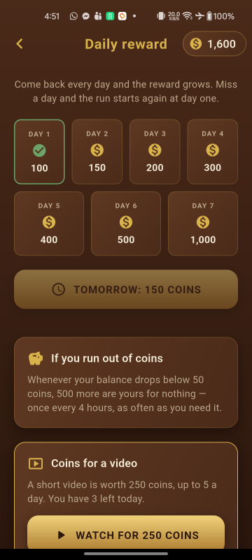
Prize tables
lib/core/economy/prize_tables.dart defines the 12 tables — number, entry cost, prize, game
mode and robot difficulty. Add, remove or reprice tables by editing that list. Tables unlock progressively:
a player unlocks the next one by winning at the previous table, or by holding at least three times its entry
cost.
The names are not in that file. A table name is text a player reads, so it lives in
lib/l10n/app_en.arb under the keys tableQualifier …
tableHallOfFame, and prizeTableNames in
lib/shared/utils/core_labels.dart is the list that maps a table's number to its key. Rename a
table by editing the ARB; add a table by adding a key, the matching entry to that list, and a translation to
every finished .arb. A table with no name throws rather than guessing, and
test/app/core_labels_test.dart fails first, naming the number.
The stock ladder runs Qualifier, Club Night, Town League, District Cup, City Open, Regional Open, National Open, Invitational, Masters Table, Grand Prix, Champion’s Table, Hall of Fame. The names are meant to read as one season, so a player can tell roughly how far up they are from the name alone. If you rebrand, keeping that sense of progression matters more than the particular words.
Entries, prizes and walking out
The entry is taken when the match starts, not when the table is chosen — a player who backs out of matchmaking has paid nothing. A win pays the prize and records the table, which opens the one above it. A loss pays nothing: the entry is already gone.
Quitting mid-match is a loss, as Section 9.2 requires, and the pause menu says so before it lets the player go. A rematch is a new match and pays a second entry; a player who cannot afford one is told rather than given a free game.
A drawn game — possible in Scramble — returns the entry. The spec is silent on
it, and a draw is explicitly not a loss, so keeping the entry for a game nobody won would be the house taking
coins for nothing. That is one line in PrizeSettlement.settle
(lib/core/economy/match_settlement.dart) if you play it differently.
All of the arithmetic is in that one file and is pure, so you can change what a table pays without going
anywhere near the board. PrizePurse (lib/features/game/prize_purse.dart) is the thin
layer that commits a settlement to the wallet and the ladder, and it guarantees a match settles only once.
Starting balance and saved data
A new player begins with 1,000 coins. Change that one constant to change the whole economy's starting point:
// lib/core/economy/wallet.dart
static const int startingBalance = 1000;
static const int lowBalanceThreshold = 50;Everything the game remembers — wallet, settings, the player's own name and avatar, owned equipment,
prize-table progress and daily-reward streak —
is stored on the device through shared_preferences, one JSON object per feature under the keys
listed in StorageKeys (lib/services/storage_service.dart). Nothing is sent anywhere,
and there is no account to sign in to.
Clearing the app's data from Android settings, or reinstalling, resets a player to the starting balance. That is intentional: there is no server to restore from. If you want progress to survive a reinstall you would need to add your own cloud save, which is outside the scope of this item.
Coin sources
| Source | Amount | Limit |
|---|---|---|
| Starting balance | 1,000 | Once, on first launch |
| Daily reward streak | 100 → 1,000 over 7 days | Once per day; a missed day resets the streak |
| Rewarded video | 250 | 5 per day |
| Out-of-coins refill | 500 | When the balance drops below 50, once every 4 hours |
Daily reward and the out-of-coins refill
Two free coin sources, both on the Daily reward screen, reachable from the home screen or
by tapping the coin badge. Each is a small immutable model in lib/core/economy/ with a Riverpod
notifier beside the storage it uses:
| Feature | Model | Notifier | Storage key |
|---|---|---|---|
| Seven-day streak | daily_reward.dart | daily_reward_provider.dart | daily_reward |
| Out-of-coins refill | coin_refill.dart | coin_refill_provider.dart | coin_refill |
Everything either of them pays is a constant, and the screen's wording is built from those constants rather than written out, so changing a number does not leave a panel saying something untrue:
// lib/core/economy/daily_reward.dart
static const List<int> ladder = [100, 150, 200, 300, 400, 500, 1000];
// lib/core/economy/coin_refill.dart
static const int coins = 500;
static const Duration cooldown = Duration(hours: 4);The ladder may be any length — runLength follows the list, and the calendar lays out the
first four days on one row and the rest on the next. The refill also reads
Wallet.lowBalanceThreshold for how poor a player has to be to qualify, so that threshold lives in
one place and the coin badge turns red at exactly the point the refill becomes available.
A day is a calendar date, not twenty-four hours. A player who collects at five to midnight and comes back after breakfast has come back the next day, and gets the next day's reward. A missed day puts the run back to day one, and the screen says so rather than leaving the player to notice the calendar has reset. Finishing the run starts it again at day one rather than paying 1,000 for ever.
Device clocks. Both features read the clock through clockProvider
(lib/services/clock_provider.dart) rather than calling DateTime.now directly,
which is what lets the tests sit on any date they like. A stored time in the future — the
mark of a device clock that was wrong and has since been corrected — is treated as a break in the run
and a cooldown that has expired, never as a reason to refuse. A cooldown held on the device cannot be
enforced against a clock the player controls in any case, and the outcome worth avoiding is an honest
player locked out of the only coins they can reach.
A player who is short of coins and waiting out the cooldown is also offered the refill immediately in exchange for a rewarded video. The video buys the wait, not a second helping: the four hours restart exactly as they do for a free refill, so five videos cannot become five refills. See the AdMob section for the video itself.
Opponent names and avatars
The matchmaking screen rolls through the roster in
lib/core/economy/robot_names.dart — 66 robots across Bangladesh, India, Sri Lanka, Nepal and
Pakistan. Edit the per-country name lists to suit your market; the avatar numbering is worked out from the
list, so adding or removing names needs nothing else changed.
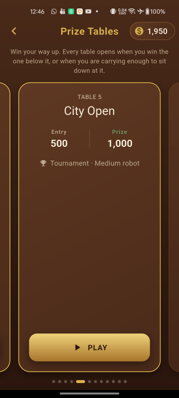
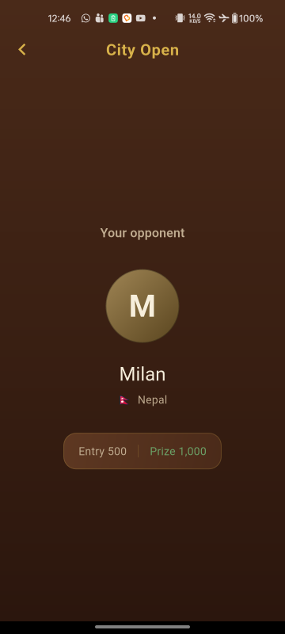
A robot is a name, a country and one of sixteen faces. The face is fixed to the name rather than drawn at
random, so a player who meets the same opponent twice meets the same one. Faces are a colour and an initial,
drawn rather than loaded from assets — the sixteen colours are in
lib/shared/widgets/avatar_palette.dart, and flags are emoji rather than images, so the whole
roster costs nothing to ship.
Which opponent appears, and every shot that opponent will mis-hit, both come from a single seed drawn when matchmaking starts. That means a match is described completely by its table and its seed, which is what makes one reproducible in a bug report.
Climbing the ladder
A table opens when the player has won at the table below it, or when they are holding three times its entry. Either is enough. The first table is always open, so a player who has lost everything can still get back in.
Those are two different questions from can this player pay the entry right now, and the card says so in different words: a shut table tells you what would open it, and an open one you cannot afford tells you what it costs. Keep that distinction if you edit the wording — telling a player to go and win somewhere else when all they need is more coins sends them off for nothing.
Which tables have been won is stored under StorageKeys.prizeTables. Note that the wealth route
reads the most the wallet has ever held, not today's balance: a table opened by a balance stays open
once that balance is spent, so paying an entry can never shut the table you are sitting at. The entry itself
still has to be affordable, which is what keeps a broke player out of the Hall of Fame.
Store policy. Because entry costs and prizes could be mistaken for gambling, the interface uses the words entry and prize throughout, never bet or stake money, and coins can never be purchased. Keep that language if you edit the strings.
Equipment shop
Fifteen items across three categories, bought with coins and purely cosmetic. One item is in play in each category at all times, and the cheapest in each is free, so a new player always has a striker, a board and a set of coins.
Everything here is built: the catalogue, the buy and equip flow, persistence, and the skins themselves. What a player has equipped is what they play on — the board, its frame and markings, the striker, the coins on the board and the coins stacked in the trays beside each seat.
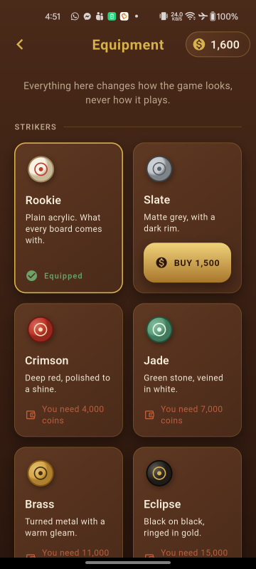
The catalogue
Every item lives in lib/core/economy/shop_catalog.dart. This is the only place prices are
set. The names and the one-line descriptions are not there: they are text a player reads, so they
live in lib/l10n/app_en.arb and are mapped to an item's id by
lib/shared/utils/core_labels.dart.
| Category | Items, cheapest first | Prices |
|---|---|---|
| Strikers | Rookie, Slate, Crimson, Jade, Brass, Eclipse | 0, 1,500, 4,000, 7,000, 11,000, 15,000 |
| Boards | Maple, Walnut, Rosewood, Marble, Midnight | 0, 3,000, 8,000, 14,000, 20,000 |
| Coin sets | Standard, Pearl, Cobalt, Regal | 0, 3,000, 7,000, 12,000 |
Owning everything costs 105,500 coins. The top prize table nets 5,000 a win, so the shop
is a long tail for an experienced player rather than a second game to grind. If you re-price anything, the
test owning everything costs 105,500 coins in
test/economy/shop_catalog_test.dart will fail and tell you the new total — update it
deliberately rather than deleting it.
Adding, removing or re-pricing an item
It takes three steps, because what the item is and what it is called live apart. First,
add an entry to the right list in ShopCatalog:
EquipmentItem(
id: 'striker_onyx', // stable, never shown to a player
category: EquipmentCategory.striker,
price: 9000,
)Second, add its name and description to lib/l10n/app_en.arb — and to every finished
translation — then run flutter gen-l10n:
"itemStrikerOnyx": "Onyx",
"itemStrikerOnyxDescription": "Black glass, gold flecked.",Third, map the id to those keys in lib/shared/utils/core_labels.dart:
'striker_onyx': l10n.itemStrikerOnyx, // in _equipmentNames
'striker_onyx': l10n.itemStrikerOnyxDescription, // in _equipmentDescriptionsMiss the third step and the shop throws an ArgumentError naming the id rather than drawing a
nameless card — and test/app/core_labels_test.dart fails before you ever see it.
Four rules the tests enforce, so you will hear about it if one is broken:
- The
idis what storage remembers, and it is deliberately separate from the name. Rename or translate an item freely in the ARB; changing itsidis what orphans a purchase a player has already paid for. - No two items in a category may share a name, because there is nothing else on a card to tell them apart but the price.
- Exactly one free item per category. It is what a new player starts with and what an unreadable saved choice falls back to, so a category of entirely paid items would leave a player with no board to play on.
- Prices rise within a category, so the shop reads left to right as a ladder.
Removing an item is safe. A saved id the catalogue no longer recognises is kept in storage but stops being used, and the player falls back to the free item of that category — so a removal costs a skin, not a crash, and putting the item back restores the purchase.
A new item also needs a palette, or it will be drawn exactly like the free item of its category. See How an item looks below. A test fails if any item in the catalogue has no palette of its own, so you will not ship a 9,000-coin striker that looks like the free one by accident.
How an item looks
Colours are not held by the drawing code. Each Canvas component is handed a palette, which is what
makes a skin a value you can edit rather than a change spread across ten files. The palettes live in
lib/game/skins/, one file per category:
| File | Type | What it colours |
|---|---|---|
board_skin.dart | BoardSkin |
The frame, the playing surface and its grain, the markings, the pocket rims and holes, and the background the board sits on |
striker_skin.dart | StrikerSkin |
The striker's face, rim and target ring |
coin_skin.dart | CoinSkin |
The white, black and queen coins — face and rim for each |
equipment_skins.dart | EquipmentSkins |
The three above together. EquipmentSkins.forInventory() turns what the player has
equipped into the palettes a game is played with |
A palette is matched to an item by its id, so to add one, add a const beside the
others and list it in that file's all:
static const StrikerSkin onyx = StrikerSkin(
id: 'striker_onyx', // the catalogue id, exactly
face: Color(0xFF2B2B33),
edge: Color(0xFF0D0D11),
ring: Color(0xFFD8B24A),
);Two tests guard the pairing in both directions: every item the shop sells must have a palette carrying its own id, and no palette may belong to an id the shop does not sell — the second is how a rename done on only one side gets caught. Two more check a skin cannot make the board unreadable: the markings must contrast with both ends of the surface gradient, and a coin set must keep a strong light-dark split. Edit the colours freely; if a board's markings vanish into its surface, the suite says so by name.
The same palettes draw the swatch on each shop card, through the same painting code as the board, so the window and the board cannot drift apart.
The optional striker perk
Section 9.5 of the design allows one non-cosmetic perk: a longer aim guide on premium strikers.
It ships switched off, so the shop sells nothing but looks — which is what the item
description claims, and what a store reviewer will read. The toggle is a single constant in
lib/game/config/input_config.dart:
const bool kStrikerPerkEnabled = false;Each striker already carries its own aimGuideScale, rising from 1.0 on the free Rookie to 1.3
on Eclipse, so switching the constant to true gives you a working ladder with no other edit.
Note that it changes how the game plays, not just how it looks: the longer guide still stops at the cushion,
but a paying player sees further than a new one — both along the aim line and in how far ahead the aim
guide will mark a coin.
Buying and equipping
A card shows one of four states: equipped, owned with an Equip button, buyable with the price on the button, or unaffordable with a note saying how many coins are needed. The last two are kept apart on purpose: an unaffordable item and an unchosen one are different problems with different answers.
Buying asks for confirmation first, naming the item, the price and the balance it will leave — a purchase is the one thing in the menus that spends coins and cannot be undone. Buying also equips, since a player who has just paid for a striker wants to use it; the item it replaced stays owned, so going back is one tap.
ShopNotifier.buy in lib/services/shop_provider.dart is the only code that
spends coins here. It checks ownership and the balance itself and returns what it spent, so a card that is a
frame out of date cannot charge twice.
What is stored
One JSON blob under the shop key (StorageKeys.shop), holding the ids bought and
the id chosen in each category:
{"owned":["striker_slate","board_walnut"],
"equipped":{"striker":"striker_slate","board":"board_walnut"}}Free items are not listed — they are owned by definition. A corrupt or missing blob costs the player their skins and nothing else: they are put back on the free items and the game opens normally.
AdMob setup
The project ships with Google's official test ad unit IDs so you can run it immediately without an AdMob account. You must switch to your own IDs before publishing.
Advertising is the only external service this game talks to. It uses the
Google Mobile Ads SDK for Flutter
(the google_mobile_ads package),
together with Google's User
Messaging Platform for consent, which ships inside that same package. There is no other API, no
backend of ours, and no network call anywhere else in the game.
Every AdMob ID in this package is a Google test value
Nothing in this archive carries an author-owned AdMob identity. You can confirm it in five places before you change anything, and you should — a copy of somebody else's publisher ID would earn them money from your players, silently:
| Where | What ships |
|---|---|
android/app/src/main/AndroidManifest.xml |
ca-app-pub-3940256099942544~3347511713 — Google's test application ID |
ios/Runner/Info.plist |
ca-app-pub-3940256099942544~1458002511 — Google's test application ID |
lib/services/ad_ids.dart, test units |
Google's four public test unit IDs, all under publisher
ca-app-pub-3940256099942544 |
lib/services/ad_ids.dart, live units |
Four REPLACE_WITH_YOUR_… placeholders, one per slot |
lib/services/ad_ids.dart, kReleaseAds |
false |
A placeholder is deliberately not a copy of the matching test ID. The two mistakes are not
symmetrical: an unfilled slot asks for an invalid unit and is told there is no fill, which earns
nothing and says so on the first device, whereas a stray test ID would serve Google's test inventory
perfectly and earn nothing quietly, possibly for months.
test/services/ad_ids_test.dart asserts that no live ID is ever a copy of a test ID, and
that kReleaseAds cannot be true while any slot is still a placeholder.
- Create an AdMob account and register your app, then create one interstitial and one
rewarded ad unit. Those are the only two formats the project knows about — there is no
banner, app-open or native unit, and the frequency rules in
AdSlotare written around these two.An AdMob app is per platform, so shipping to both stores means two AdMob apps and four ad units in total. You can fill in one platform and leave the other on its placeholder: an unconfigured platform asks for an invalid unit and is simply told there is no fill, which earns nothing and is obvious on the first device.
AdIds.liveIdsConfiguredForis what reports a platform ready. - Put your unit IDs in
lib/services/ad_ids.dartand setkReleaseAds = true. Replace the wholeREPLACE_WITH_YOUR_…string, prefix included — anything still starting with that prefix counts as unfilled. - Replace the test application ID already present in
android/app/src/main/AndroidManifest.xmlwith your own:<meta-data android:name="com.google.android.gms.ads.APPLICATION_ID" android:value="ca-app-pub-XXXXXXXXXXXXXXXX~YYYYYYYYYY"/> - Replace the same ID in
ios/Runner/Info.plistunder the keyGADApplicationIdentifier. - Host an
app-ads.txtfile at the root of the developer website listed in your store entry, so thathttps://yourdomain.com/app-ads.txtreturns it as plain text. It is one line, and the last field is AdMob's own identifier — the same for every publisher:google.com, pub-XXXXXXXXXXXXXXXX, DIRECT, f08c47fec0942fa0Your
pub-number is the middle of your application ID:ca-app-pub-XXXX~YYYYbecomespub-XXXX. AdMob crawls the file about once a day, so the status stays Not found for a while after you upload it. Ads serve either way — an unverified app only loses bid value.
An application ID is not an ad unit ID. The application ID that goes in the manifest and the
Info.plist is ca-app-pub-…~NNNN, with a tilde. An ad unit ID is
ca-app-pub-…/NNNN, with a slash. Both halves must also carry the
same pub- number: a unit requested under a different publisher's application ID never
fills, and nothing on screen tells you why. test/app/admob_identity_test.dart checks all of this
for you, so run flutter test after editing the IDs.
Never ship with the test IDs in place, and never click your own live ads. Both will get an AdMob account suspended.
Do not delete the application ID meta-data. The Google Mobile Ads SDK reads it from a
ContentProvider during process start-up, before any Dart code runs. If the entry is missing or
malformed the app crashes the instant it is opened, with IllegalStateException: Missing application
ID. To strip ads out of the project entirely, remove the google_mobile_ads dependency as
well, not just the manifest entry.
How an ad is loaded
Three files, in layers. lib/services/ad_ids.dart holds the unit IDs and the
kReleaseAds flag. lib/services/ads_service.dart holds an AdSlot per
unit, which keeps one ad loaded, retries a failed request and fetches the next the moment one is spent.
lib/services/admob_loader.dart is the only file in the project that imports
google_mobile_ads: everything above it works through a small FullScreenAd
interface, which is what lets the loading rules be unit tested without an AdMob account.
Two constants on AdSlot are worth knowing about if you want to change how hard the app tries:
| Constant | Default | What it does |
|---|---|---|
maxAttempts | 3 | How many times one preload asks before giving up. It gives up rather than retrying for ever, so a player with no signal is not paying for a request every few seconds all session. The next preload starts a fresh set of attempts. |
firstRetryDelay | 4 seconds | The wait before the first retry, doubling after that — 4s, then 8s. |
Nothing is fetched at start-up. An ad requested and never shown counts against the match rate AdMob pays on, and most sessions never ask for a rewarded video, so each slot is loaded by the screen that is about to need it.
When no ad is loaded, AdSlot.show() returns false rather than throwing or waiting, and the
caller shows the "Video not available, try again later" message. A false always means the player saw
nothing, so a rewarded video that returns false has earned nothing.
Where ads appear
- Interstitial — only after a match against the robot, at most once every two matches and never less than three minutes apart. Never during play, and never after a local 2-player game.
- Rewarded video — only when the player taps to watch one, always behind a confirmation dialog, with coins granted strictly in the reward callback.
The interstitial caps
Two limits, and both must be satisfied before an ad appears. They live in
lib/core/ads/interstitial_cap.dart:
| Constant | Default | What it does |
|---|---|---|
matchesBetweenAds | 2 | Robot matches that must finish between two ads. A new player therefore finishes two matches before seeing anything. |
minimumGap | 3 minutes | The shortest time allowed between two ads, whatever the match count says. This is what stops a run of very short games being interrupted twice in a minute. |
Both are stored, under the interstitial key, so closing the app is neither a way to be
shown an ad sooner nor a way to avoid one.
An ad appears at a break — when the player leaves a finished match, or asks for a rematch — and never while a game is on screen. A match the player abandoned part-way is not counted and is never followed by an ad: quitting is scored as a loss, but it is not a match anybody sat through. A local two-player game neither counts nor shows, as Section 10 requires.
If you want ads to be rarer, raise either constant; the pair are independent and the stricter one
wins. Setting matchesBetweenAds to a very large number is the practical way to turn
interstitials off without removing the code.
The rewarded video
A video is worth 250 coins, and a player may watch five a day — 1,250 coins, which is worth comparing
against the prize-table entries: a full day of videos buys a seat at the City Open and no more. A player can
keep themselves at the board with videos; they cannot climb the ladder with them. Both numbers are in
lib/core/ads/rewarded_allowance.dart:
| Constant | Default | What it does |
|---|---|---|
RewardedVideo.coins | 250 | What one video pays |
RewardedVideo.dailyLimit | 5 | How many may be watched in a day |
A day is a calendar day, the same reading the daily reward streak takes and deliberately the same function: both are "once a day" rules on the same screen, and a player whose streak had rolled over while their video allowance had not would be looking at two different answers to what day it is.
A video is always behind a confirmation — "Watch a short video for 250 coins?" — and only ever starts from a tap that says so. Coins are credited inside the SDK's reward callback and nowhere else, so a video closed half way through pays nothing. Such a video also costs the player none of their five: charging an allowance for an ad that paid nothing would be taking something in exchange for nothing.
Videos are offered in two places, both on the coin screen:
- 250 coins, any time, five a day.
- The out-of-coins refill, immediately. A player who is short of coins and waiting out the four-hour cooldown can watch a video and have the 500 now. The video buys the wait, not a second helping: the cooldown restarts exactly as it does for a free refill, so five videos cannot become five refills. Offered only while both halves of the Section 9.4 rule apply — a low balance and a cooldown still running.
The free refill is listed above the video on that screen, which is not the order the specification lists them in. A player who is out of coins should be shown the thing that costs them nothing before the thing that costs them thirty seconds.
When nothing is loaded the player is told "Video not available, try again later." and nothing is charged. If you want videos to be rarer or worth more, change the two constants above; nothing else reads those numbers, and the copy in the panels and the confirmation is assembled from them.
Consent in GDPR regions
The app uses Google's User Messaging Platform, which ships inside google_mobile_ads — there
is no extra dependency. The flow is in lib/services/consent_service.dart and you should not
need to change it.
One step is yours and the project cannot do it for you: configure a GDPR message in your own AdMob account under Privacy & messaging. Until you do, UMP has no form to show, and players in the EEA will see no ads at all — which is the correct behaviour, not a bug.
Consent is gathered the first time an ad is requested, not at launch, and no ad is ever requested
until the SDK says consent allows it. That check is a parameter of AdSlot
(AdGate) rather than something buried in the plugin wrapper, so it is covered by tests: a
refused gate means no request, is not retried, and a gate that throws is read as a refusal rather than as
permission.
Note the apparent oddity that MobileAds.initialize() is still called from
main.dart, before consent. That is deliberate. Initialising the SDK does not request an ad, and
what Google's EU consent policy governs is the request. If your own legal advice is stricter, move that call
into the consent flow: it is idempotent and awaited by every request, so the only consequence is that the
first ad of a session takes a moment longer to arrive.
Where a region requires it, the settings screen grows an Advertising choices row that reopens Google's form, so a player can change their mind. It is hidden everywhere else, because a privacy control that does nothing for the person looking at it is worse than no control.
Seeing the consent form outside Europe
- Run the app and open the coin screen, or play a match against the robot, so that an ad is requested. Nothing is logged before that, because that is when consent is gathered.
- In the device log, under the tag
UserMessagingPlatform, findUse new ConsentDebugSettings.Builder().addTestDeviceHashedId("…"). - Put that string into
kConsentTestDeviceIdsinlib/services/consent_service.dart, and setkConsentDebugGeographytoDebugGeography.debugGeographyEea. - Reinstall. That device now behaves as though it were in the EEA. The setting affects listed devices only, so it is harmless to leave in place — but clear it before a release build.
Remove ads
The settings screen carries a panel naming a future one-off purchase to switch off advertising. It is a
sentence, not a control: there is no in-app purchase code in the project, and a greyed-out switch that can
never be switched is worse than an honest note. If you do not intend to add the purchase, delete that one
ComingSoonPanel from lib/features/settings/settings_screen.dart.
Languages
The game is localised with Flutter's own tooling — flutter_localizations
from the SDK and gen-l10n — so there is no third-party localisation package to learn and no
build step beyond the one flutter pub get already runs.
Thirteen languages ship: English, Bangla, Arabic, Hindi, Russian, Turkish, German,
Chinese, Amharic, French, Greek, Spanish and Brazilian Portuguese. 211 sentences each. Nothing is bundled
to support them — the platform's own fonts render Bengali, Devanagari, Arabic, Cyrillic, Greek, Han
and Ethiopic on any current phone, which is why assets/fonts/ is empty.
Read lib/l10n/GLOSSARY.md before editing any translation. Thirteen words
carry the game — striker, coin, queen, cover, baseline, foul and the rest — and a translator who
renders cover as "lid" writes a sentence that reads perfectly and means nothing to a carrom
player. The glossary names all thirteen in every language, and
test/app/glossary_test.dart holds the translations to it: a term the glossary states and no
sentence uses is a failing test.
Two of those words are not a matter of taste. Entry and prize must never become a stake, a wager or a bet in any language: the coins are virtual and cannot be bought, cashed out or transferred, and a store reviewer reads the translation too. The same test refuses a known betting word anywhere in any ARB file.
Adding a language
Six steps. Steps 2 to 5 are each caught by a test if you skip them, and the test says which — that was measured by adding a language the lazy way and reading what failed, rather than written from memory. Step 1 is checked for its mechanics only: nothing can tell whether you actually translated the words. Step 6 is the one to be careful of, and the warning below says why. Japanese, as an example:
- Copy the template and translate the values. Keep every key and every
{placeholder}exactly as it is; the key is what the code asks for and the placeholder is where the number or the name goes.
Metadata — thecp lib/l10n/app_en.arb lib/l10n/app_ja.arb@keyblocks describing each string — lives only in the template, so you can delete it all from your copy. Keep"@@locale"and change it to your language's code. - Read the glossary first, and add your language to it.
lib/l10n/GLOSSARY.mdnames thirteen carrom terms. Decide them once, then translate with them; it is far cheaper than discovering halfway through that cover has been rendered three different ways. Add a section for your language naming all thirteen. - Name the language in its own language. Add it to
kLanguageNamesinlib/shared/utils/locale_choice.dart—'ja': '日本語', not "Japanese". A picker that lists languages in the language you are already reading is no use to the person who needs it. - Declare which script it is written in. Add it to
_scriptintest/app/glossary_test.dart—'ja': 'Han'— and add the range to_scriptsif the alphabet is not already there. That test holds every string in a language to its own alphabet, which is the only thing that can catch a character from the wrong one: a Cyrillicоinside a Latin word renders identically and would otherwise ship. - Hold it complete. Add
'app_ja.arb'to thecompleteset intest/app/localisation_test.dartonce it carries every key. That set is what holds a finished translation to the template for ever; a language left out of it can quietly lose a sentence later and nothing will say so. - Regenerate and run the tests.
flutter gen-l10n # or just: flutter pub get flutter test
Nothing else has a list to keep up to date. The picker and supportedLocales are both
derived from the files that exist.
Regenerate after editing an ARB. The generated Dart in lib/l10n/ is what
the app actually reads, so an edited .arb changes nothing until flutter gen-l10n
runs. test/app/localisation_test.dart fails when the two drift apart, which is the only
reason that mistake is not silent.
And read what gen-l10n printed. It reports some problems as plain prose
with no error beside them, and then exits having regenerated nothing at all — so a language can sit in
lib/l10n/ looking perfectly fine and not be in the app. If a new language does not appear in
the picker, that is the first thing to check.
Common complaints, and what they mean
| What you see | What to do |
|---|---|
Arb file for a fallback, pt, does not exist |
Your language's code carries a country, like pt_BR, and
gen-l10n will not run without a base app_pt.arb beside it. Either add the
base file or drop the country from the name. Brazilian Portuguese ships here as plain
pt for exactly this reason: one file rather than two identical ones, and a phone set to
either pt-BR or pt-PT resolves to it. |
app_ja.arb is held complete and is missing sentences |
You added it to the complete set before finishing it. Either finish it or take it
back out until you have. |
app_ja.arb has keys app_en.arb does not |
A misspelt key, or one left over from a sentence the game no longer says.
gen-l10n ignores those without a word, so the work would simply go nowhere. |
<key> dropped the placeholder <value> |
A {placeholder} did not survive into your translation, so a name or an amount will be
missing from that sentence at run time. Check every branch of a plural too — each one needs it. |
<screen> overflows in <language> |
The translation is longer than the screen, not wrong. Shorten it, or bound the widget. This is the usual way a translation breaks a layout. |
app_ja.arb contains "…", which is a betting word |
See the warning at the top of this section. The coins are virtual, and the game must not describe itself as gambling in any language. |
no script declared for ja |
Step 4. Until the language names its alphabet, nothing is checking that its strings stay inside one. |
ja ships now — pick a tag the game really lacks |
Only if you add Japanese specifically. One test needs an example of a language the game does
not have, and it uses ja; change it to something you have no plans for. It
asserts its own example is really absent, which is why it noticed. |
Dropping a language
Three steps. Only the second is caught by a test, so the third is the one to remember:
- Delete
lib/l10n/app_<code>.arb. - Remove it from the
completeset intest/app/localisation_test.dart, which otherwise fails withapp_<code>.arb is held complete and does not exist. - Delete the generated
lib/l10n/app_localizations_<code>.dart.gen-l10ndoes not clean up after itself: the file is left behind, nothing imports it any more, the project still builds and every test still passes — so it would simply ship as dead code. Nothing catches this one.
Then flutter gen-l10n and flutter test. Nothing else needs touching: its entry
in kLanguageNames, its section in the glossary and its row in _script are all
harmless left in place, and the picker and supportedLocales follow the files that exist.
A player who had chosen it is not stranded. A stored language tag the game can no longer honour falls back to following the phone — the same reading the shop takes of an item id it no longer recognises.
Right-to-left languages
Arabic is one of the thirteen, and its layout is mirrored. Adding it needs no code:
Flutter mirrors rows, padding, text alignment and the navigation chevrons from the locale, and the screens
were checked at 320 dp in both directions. test/app/rtl_test.dart keeps them that way.
The one thing that must not mirror is the board, and it does not. A carrom board is drawn on a Flame canvas, which has no text direction at all — and the slide bar under it is deliberately direction-blind to match, reading the raw horizontal position of your finger and painting the knob from the left edge. That is what keeps the thumb and the striker on the same side of the screen.
Do not make the slide bar direction-aware. It looks like an oversight and is not.
The bar is already mirrored when the board turns round for the second player
(barFraction in lib/game/input/bar_mapping.dart); a second mirror from the text
direction would cancel it, and the striker would move the opposite way to the finger in Arabic
only. test/game/pass_and_play_test.dart drives all four combinations of direction
and board rotation for exactly this reason — with the bug in place, every left-to-right test still
passes.
What the tests will not let you get wrong
- A key a translation has but English does not — a typo, or a sentence the app stopped
saying — is work that goes nowhere:
gen-l10nignores it without a word. A test refuses it for every language, finished or not. - A finished translation missing a key falls back to English for that one line, which
reads as a translation that is merely unfinished. The
completeset at the top oftest/app/localisation_test.dartlists the languages held to the full template; a language joins it when it is translated, and from then on it can never quietly lose a sentence. A language left out of the set must still translate something — an empty stub that puts a language in the picker and shows English behind it fails too. - A placeholder dropped in translation — a
{name}that does not survive into the translated sentence — is the fault nobody can see by reading a language they do not speak.test/game/game_strings_test.dartruns every sentence in every locale and asserts that every value it was handed comes out the other side. A new language is covered by the fact of its file existing. It asserts presence rather than a count, deliberately, because a language may well mention a number once where English mentions it twice. - A language with no name would appear in the picker as a bare tag.
- A translation that does not fit.
test/app/locale_layout_test.dartbuilds every screen in every language on a 320 dp phone and fails on a layout overflow. This is the one that matters most for a language nobody on your team reads: the usual way a translation breaks a screen is not that it is wrong but that it is longer. It found the prize-table card in nine languages at once.
Plurals, and why the sentences are shaped the way they are
Prizes use ICU plurals, so one coin reads "1 coin" and two hundred reads "200 coins" — and a language with more than two plural forms, as Arabic and Russian both have, gets as many as it needs without any Dart changing:
"prizeWon": "Prize {coins, plural, =1{{coins} coin} other{{coins} coins}}"Note that the =1 branch writes {coins} rather than a literal 1.
It would read the same in English, and in a language that writes its own digits it would not: a bare
1 is a Latin digit sitting beside ১ everywhere else on the screen.
Every sentence the game shows is in the ARB — 208 of them, including the shop's item
names, the twelve prize table names, the two rule-set names, the three difficulties and the five countries.
The only user-facing text deliberately left out is the product name, the CARROM CIRCUIT
wordmark, the thirteen language names in the picker, and the sixty-six robot names, which are people's names.
test/app/no_hardcoded_strings_test.dart reads the source and fails on an English literal put
back into a widget, naming the file, the line and the sentence.
Screens read the generated class directly through context.l10n
(lib/shared/utils/l10n_context.dart). The board is the exception: its message line and result
panel are built by pure functions with no widget tree under them, so they are handed their sentences through
GameStrings instead.
Every sentence is a whole pattern rather than fragments joined at runtime, because word
order belongs to a language. GameStrings
(lib/shared/utils/game_strings.dart) is the interface the game asks, and
L10nGameStrings is the adapter onto the generated class — it exists because the generated
methods take positional arguments and several take two of the same type in a row, so naming them
once is what stops a caller handing the second player's name first.
Numbers
Every number the game shows is written the way the chosen language writes it. Seven of the
thirteen do not group thousands with a comma — German, Turkish, Greek, Spanish and Brazilian Portuguese
use a full stop, Russian and French a space — and Bangla has digits of its own, so 12,500 coins reads
12.500, 12 500 or ১২,৫০০
depending on who is reading.
There are exactly two ways a number reaches the screen, and both go through
NumberFormat.decimalPattern so they cannot disagree:
- Coin amounts, through
formatCoins(l10n, amount)inlib/shared/utils/number_format.dart. It takes the localisations because a separator is a fact about a language. Amounts go into the ARB asStringplaceholders already formatted. - Counts — points, a day in the streak, a table number — as
intplaceholders in the ARB. These need"format": "decimalPattern"beside the type, orgen-l10ninterpolates the raw number and you get Latin digits with no grouping in all thirteen languages.
"placeholders": { "points": { "type": "int", "example": "7", "format": "decimalPattern" } }A numeric placeholder without that line is the easy mistake, because nothing about it
looks wrong: the call compiles, the sentence appears, and only a reader of Bangla would notice the digits
are the wrong script. test/app/localisation_test.dart therefore checks the rule structurally
— every numeric placeholder in app_en.arb carries decimalPattern — and
names any that does not. Use an int only where the sentence needs the number itself, which
means an ICU plural; otherwise format it and pass a String.
The language picker
First-class, under the profile row in Settings, because a player who cannot read the screen needs to reach it before anything else on it. Languages are listed in their own language — "বাংলা", not "Bengali" — which is why those names are the one piece of user-facing text in the app that is deliberately never translated. Follow my phone is the default and stores an empty tag.
The chosen language is stored as a BCP-47 tag on GameSettings rather than a
Locale, because lib/core/ may not import dart:ui;
locale_choice.dart is the seam that converts between the two.
Sound & vibration
Ten sound effects, listed in GameSound in
lib/services/audio_service.dart. The enum value carries the file name, and that name is the
only contract with assets/audio/:
| File | When it plays |
|---|---|
striker_hit.wav | The striker reaching a coin, scaled by how hard |
coin_click.wav | Coin on coin, scaled the same way |
wall_thud.wav | A cushion, or a pocket lip a coin was too fast to drop into |
pocket_drop.wav | A coin going down. Once per step, however many fell |
foul_buzz.wav | A foul: striker pocketed, air shot, or the clock run out |
win_fanfare.wav | A game ending in anything but a defeat by the robot |
lose_sting.wav | Losing to the robot, and only that |
button_tap.wav | Every CarromButton in the game |
coin_collect.wav | Coins arriving: a reward, a refill, a video, a prize |
timer_tick.wav | Each of the last five seconds of a turn |
These are synthesised, and they ship that way. They were generated rather than
recorded, so the game makes the right noise at the right moment without commissioned sound design. They
are the one part of the presentation worth replacing if you have a budget for it. Drop your own ten files
in under the same names and nothing in the Dart changes; to use different names, change them in one place
in GameSound. Either way,
flutter test test/audio/sound_assets_test.dart tells you whether the names and the files
still agree — a mismatch is silent at runtime by design, because an unplayable sound must never stop a
board game.
How loud a knock is
Section 11 asks for the striker hit to be scaled by speed; the same curve serves every knock, because
they are all the same question. The constants are in lib/game/config/audio_config.dart:
| Constant | Default | What it does |
|---|---|---|
kQuietestImpact | 60 | Below this a contact makes no sound. A settling board produces a long tail of very soft contacts, and a click for each is a rattle that never ends. |
kLoudestImpact | 900 | At and above this a knock plays at full volume. Well under the 2,200 a full-power striker leaves at, because by the time it reaches the pack it has slowed. |
kQuietestVolume | 0.18 | How loud the quietest audible knock is. Not zero: a knock fading to nothing has a band where it is playing but inaudible, which reads as dropped sounds. |
kMaxKnocksPerFrame | 3 | The opening break lands a dozen contacts in one step, and a dozen clicks at once is static rather than a break. The loudest are kept. |
The player can turn sound off in Settings; the switch is read on every sound rather than cached, so it takes effect on the next shot. A missing or unplayable file is swallowed — a buyer who supplies a format the platform dislikes gets a quiet game, not a crash.
Vibration
Light on a knock, firmer when a coin goes down, heavier on a foul, through Flutter's own
HapticFeedback — no extra dependency. The player can switch it off in Settings.
Two numbers in lib/game/config/haptics_config.dart stop it becoming a nuisance:
| Constant | Default | What it does |
|---|---|---|
kQuietestJolt | 320 | The softest knock worth feeling, far above the threshold for being heard. An ear takes a dozen quiet clicks in an opening break and reads them as a break; a hand reads them as a phone that will not stop. |
kMaxJoltsPerFrame | 1 | A vibration motor rises and falls over tens of milliseconds, so two jolts a frame apart are one longer, muddier buzz rather than two. |
Settings
Sound, Vibration, turning the board round, the aim guide, the turn timer, and the time allowed for each shot — three lengths (15, 20, 30 seconds) rather than a slider, because the difference between 20 and 21 is not a preference anybody holds. A new length applies to the next game, not the one on screen, and so does a change to the aim guide: both are read once, when the board is built.
One of the specification's settings is deliberately absent: there is no music toggle, because there is no music track, and a switch that controls nothing is worse than no switch.
The aim guide
Section 7.1 of the design asks for a guide that “shows the first collision point”. It is a ghost striker drawn where the striker would first touch a coin, a dot where the two would meet, and a dashed line out of that coin showing which way the coin itself would go. It is on by default — the aid this genre is played with, and a cut angle is the one thing about a carrom board that a phone screen makes genuinely harder to read. A player who would rather read the board themselves switches it off.
The geometry is a pure function, firstContact in
lib/game/input/aim_contact.dart, and it is an exact ray cast rather than a simulation: the
striker leaves in a straight line, and friction only ever shortens its velocity, never turns it. What it
deliberately does not answer is whether the striker gets there — at a feeble power it stops
short, and the guide keeps the same silence the aim line does. A test fires the shot it predicts and asserts
that the engine's first contact is the one the guide marked, which is what holds the two to the same
board.
The coin’s own path is the half that makes a shot aimable. The ring answers “which
coin will I hit”, which a player can already see; on a cut, that coin leaves at an angle to the shot, and
working out which angle is the part a phone makes genuinely hard. The direction is exact geometry — the line
between the two centres at the moment of contact, which is the whole of what an elastic hit between two circles
decides — and coinProjectionLength in lib/game/input/aim_line.dart decides how far it
is drawn: one fixed kCoinProjectionLength, clipped at the cushion, for the same reason the aim line
has one length. How far the coin actually travels depends on a power the guide has no business restating.
Two honest limits, both deliberate. It accounts for no second coin in the way — only the first contact can be answered without running the engine — and it is about two and a half degrees optimistic, because the engine resolves a contact after a sub-step of overlap and so uses a line of centres slightly past the exact tangency. That is roughly 13 units of drift over the 300 that get drawn, against a pocket 30 units across: it points a player at the right pocket and should not be read as finer than that. A test fires the cut it predicted and holds the drawn direction to the one the engine actually sends the coin off in.
The guide sees only as far as the aim line reaches, so a contact past the end of the line is not marked. That is also what makes the striker perk a guide perk, exactly as Section 7.1 words it. The coin’s path takes no reach of its own: the perk already buys a longer sight of the board, and stretching the marked coin’s path as well would pay it out twice.
It is drawn in two inks, a near-white over a dark halo, and the halo is not decoration.
The guide is painted over every board rather than chosen per board, so unlike a board's own markings it
cannot pick a colour that suits the surface: measured against the lit end of Marble, a near-white mark
differs by 0.019 of relative luminance, and against Maple by 0.199 — both under the 0.25 this project
demands of board markings. With the halo the worst case across every board skin is 0.451. If you add a board
skin, test/game/equipment_skins_test.dart will tell you if the guide disappears into it.
Animations & splash
Timings are in lib/game/config/animation_config.dart:
| Constant | Default | What it does |
|---|---|---|
kPocketDropDuration | 260 ms | How long a pocketed coin takes to shrink and fade into the hole |
kPocketDropScale | 0.35 | How small it gets before it is gone. Not zero: a disc shrinking to a point draws a last frame of one pixel, which reads as a speck left behind. |
kScorePopupDuration | 900 ms | How long a "+20" rises and fades |
kScorePopupRise | 62 units | How far it rises — about two coin widths |
kCoinFlightDuration | 750 ms | How long collected coins take to reach the wallet badge |
Score popups are a Scramble feature. They show the points the rules arrived at rather than the coins pocketed, because the two are not the same — the queen pays nothing until she is covered, and a striker foul takes ten away. Tournament keeps no score, so it pops nothing: the tray filling beside the "n of 9" counter already says a coin was banked.
The splash screen
The brand colour sits in three places that cannot read one another, and a test keeps them in step:
CarromColors.walnutDeepinlib/app/theme.dartcarrom_walnut_deepinandroid/app/src/main/res/values/colors.xml- the background colour in
ios/Runner/Base.lproj/LaunchScreen.storyboard
Change all three when you rebrand; test/app/splash_test.dart fails if you miss one. Note
that the Android window background is set to the same colour as well as the splash drawable
— the window shows through for the frame between the splash being dismissed and Flutter painting,
and leaving it white puts the flash one frame later rather than removing it.
Android release build
- Create a signing key. Keep it outside the project folder, so that deleting a
checkout cannot destroy it:
keytool -genkeypair -v \ -keystore "$HOME/carrom-circuit-upload.jks" \ -storetype JKS -keyalg RSA -keysize 4096 -validity 10000 \ -alias uploadkeytool asks for the passwords rather than taking them as arguments, so they stay out of your shell history. The 10000-day validity is Google's own requirement: an upload key that expires before 2033 is rejected.
- Copy the template and fill in the four values:
cp android/key.properties.example android/key.propertiesandroid/key.propertiesis git-ignored and must never be committed, shared, or included in anything you distribute — anyone holding it and the keystore can publish an update to your app.android/key.properties.exampledocuments each field. - Build the bundle Google Play expects:
The output isflutter build appbundle --releasebuild/app/outputs/bundle/release/app-release.aab. - For direct installation or sideloading, build an APK instead:
flutter build apk --release
If key.properties is missing, the release build still succeeds but is signed with the
debug keys and prints a warning saying so. That is deliberate, so the project builds from a clean
clone before you have made a key — but such a build cannot be uploaded to Play, which refuses a
debug-signed bundle. Watch for the warning if an upload is rejected:
WARNING key.properties not found: signing the release build with the DEBUG keys.flutter test test/app/release_signing_test.dart checks that the fields Gradle reads are the
fields the template documents, that no keystore or key.properties has been committed, and that
no password has been hardcoded into the build file.
Back the keystore up, and the passwords with it. Without Play App Signing, losing them means you can never publish another update to the same listing — you would have to ship a new app and lose every install and review.
Enrolling in Play App Signing is strongly recommended, and is required for new apps on Google Play. Google then holds the app signing key and the key above is only your upload key, which Google support can reset for you if it is lost or compromised.
iOS release build
- Open
ios/Runner.xcworkspacein Xcode. - Under Signing & Capabilities, select your Apple Developer team and bundle identifier.
- Build the archive:
flutter build ipa --release - Upload the resulting archive with Xcode's Organiser or Transporter.
An Apple Developer Program membership and a Mac are required.
Web build
Web is not a supported target for this item, and it is not recommended for production. The game is built, released and tested for Android, with iOS as a second target. The web files are included because Flutter generates them and because the icon generator writes into them, not because the game has been shipped to a browser.
Having said that, it does build and it does run, so here is exactly where it stands rather than a flat refusal.
How to build it
flutter build webThat writes a complete static site into build/web — copy the contents of that
folder to any web host or CDN. There is no server component to deploy, because the game has no
backend of any kind. To try it before you publish anything, use the following and Flutter will open
it for you:
flutter run -d chromeWhat works, and what does not
| Area | On the web |
|---|---|
| The game itself | Works. The board, the physics, the robot opponent and the menus all render and play. The engine is pure Dart with no platform calls in it, so it behaves identically to the mobile build. |
| Saved progress | Works, through the browser’s local storage. Coins, settings, the shop and the profile persist. Clearing site data resets them, and progress does not follow a player to another browser or machine. |
| Advertising | Does not work, at all. The Google Mobile Ads SDK publishes Android and iOS implementations only, so no ad of any kind can load in a browser and start-up logs two uncaught errors where the SDK would normally initialise. The game carries on regardless, because every path that shows an ad already copes with there being none. |
| Screen orientation | Not applied. The portrait lock is a mobile setting that browsers ignore, so the game is laid out into whatever shape the browser window happens to be. |
| Sound and vibration | Sound has a web implementation and should play once the player has tapped something, because browsers block audio until then. Vibration does nothing on a desktop browser. Neither has been verified on real hardware. |
What was actually checked, so you know how far to trust the table above:
flutter build web completes successfully, the built site loads in Chrome, the home
screen renders correctly and a fresh wallet reads its starting 1,000 coins, which means storage is
working. A full play-through across several browsers has not been done, and no web build
has been put in front of users. Treat the web target as a starting point you would need to test
yourself, not as a finished second product.
If you do not want the web files, deleting the web folder is
safe — nothing in the Android or iOS build reads it. Two things then need a moment of your
attention: tool/generate_app_icons.py writes three icons into that folder and will
fail if it is missing, and the display-name row for web under
Rebranding stops applying.
Your privacy policy
Google Play will not publish an app without a privacy policy at a publicly reachable URL — one that does not require a login. You need your own: it describes your data practices under your name, so it is not something this item can ship for you.
What it has to cover for this app is short, because the app itself collects nothing. There is no account,
no server and no analytics; game progress is a local shared_preferences blob that never leaves
the device. Almost everything a policy must disclose comes from the ads SDK — the exception is the
first item below:
- that the game keeps a little data on the device, including a name the player
types in themselves on the Profile screen. This is not collected in the sense the
stores mean — nothing is transmitted, so Play's Data safety form answers Personal info
with No, and over-declaring it would oblige you to describe a transfer that does not
happen. Disclose it anyway, under a heading like Information stored on your device: a player may
well type their real name, and a policy that does not mention the field is wrong about the app. The full
list of keys is in
StorageKeys; - that the app shows ads supplied by Google AdMob, and that Google — not you — collects data to serve and measure them;
- the advertising ID, device and app information, approximate location derived from the IP address, and ad interactions;
- links to Google's Privacy Policy and to how Google uses data from apps that use its services;
- how a player changes their mind: the in-app Advertising choices row in Settings, and resetting the advertising ID in Android's own settings. A player can clear their name on the Profile screen, and uninstalling removes everything the app stored;
- a contact address.
The permissions to describe are not the app's own — it declares none. These arrive with
play-services-ads-api and appear on your store page regardless:
| Permission | Why it is there |
|---|---|
INTERNET, ACCESS_NETWORK_STATE | Fetching ads, and knowing whether there is a connection |
com.google.android.gms.permission.AD_ID | Reading the advertising ID |
ACCESS_ADSERVICES_AD_ID, …_ATTRIBUTION, …_TOPICS | Android's Privacy Sandbox advertising APIs |
WAKE_LOCK, FOREGROUND_SERVICE | Used internally by Google Play services while handling ad requests |
You can confirm this list for your own build at any time:
aapt2 dump permissions build/app/outputs/flutter-apk/app-release.apkThe AD_ID permission means the Play Data safety form must declare that
the app collects and shares a device identifier for advertising. If you ever target the app at children,
Play's Families policy requires that permission to be removed and the ads configured for child-directed
treatment — which is a code change, not a form change.
Store checklist
- Final application ID set and verified on both platforms
- App name, launcher icon and splash screen replaced with your artwork
- Live AdMob IDs in place and
kReleaseAds = true app-ads.txtpublished on your developer website- Privacy policy published and linked in both store listings — see below for what it has to disclose
- Store listing text, screenshots and feature graphic prepared
- Content rating questionnaire completed, declaring the app contains advertising
- Tested on at least three devices, including a low-end phone and a tablet
New Google Play developer accounts must run a closed test with real testers for a required period before they can promote a build to production. Plan for that in your release schedule.
FAQ
Do I need an AdMob account to publish this at all?
No. The game is complete and fully playable with no advertising, no account and no network connection. AdMob is how the item is set up to earn, not something the game needs in order to run or to be accepted by a store.
What you must not do is publish with the Google test IDs still in place, because that serves Google’s test inventory and pays nobody. So there are two honest routes:
- Keep the ads. Create a free AdMob account, put your own IDs in, and set the release flag. That is one short file and two lines of XML, described under AdMob setup.
- Remove the ads. Advertising reaches the game in exactly two screens, so
taking it out is a small job rather than a rewrite. Remove the
google_mobile_adsdependency from the pubspec, delete the application ID meta-data from the Android manifest and the iOS property list, and remove the two calls that offer an ad. The rewarded-video panel on the daily reward screen and the interstitial after a prize match are the only two places involved.
What happens to a player’s coins and progress if they reinstall the app?
Everything a player accumulates — coins, the prize-table ladder, the daily-reward streak, purchased equipment, their name and avatar — is stored on the device only. There is no server, no account and no cloud save, and none of it is ever uploaded anywhere. That is also why the privacy policy can say the game collects nothing.
The practical consequence is this. Uninstalling clears the saved data. However, the project does not switch off Android’s Auto Backup, which is on by default, so on a device signed in to a Google account Android may back the saved values up and restore them when the app is installed again. You should treat that as likely but not guaranteed — it depends on the player’s own backup settings and on Google’s scheduling.
If you would rather progress never came back, add android:allowBackup="false" to the
application tag in android/app/src/main/AndroidManifest.xml and the data
is cleared for good on uninstall. If instead you want progress to follow a player between devices,
that needs an account system and a backend, which this item deliberately does not include.
Does the game work on tablets?
Yes. The board is drawn in its own units through a fixed-resolution camera and scaled to whatever screen it finds, so there are no pixel breakpoints anywhere and no tablet-sized layout to maintain. The interface is laid out the same way, and the automated tests build every screen at 320 dp — narrower than any tablet — so the small end is the one under pressure, not the large one.
Two things to know. The game is locked to portrait on both platforms, so on a
tablet it stays portrait rather than following the device’s rotation; on a large screen the
board is simply a large square with the score panels above and below it. And it has been tested on
phones rather than on a physical tablet, so if tablets matter to your launch, run it on one before
you publish. Unlocking rotation means changing the orientation in three places — the call in
lib/main.dart, the Android manifest and the iOS property list — and the panels
above and below the board were never designed for a landscape shape, so expect to spend time on that
layout if you do.
Does the game need an internet connection?
Only for advertising. Every other part — the rules, the physics, the robot opponent, the economy, the shop and all thirteen languages — runs entirely offline. With no connection the game plays normally and ad requests simply return nothing, which every screen already handles.
Is there a server, a database or an API to set up?
No. There is no backend of any kind, nothing to host and nothing to pay for monthly. The only external service the app talks to is Google’s ad network.
Does it include in-app purchases?
No. The coins are virtual, cannot be bought with real money, and cannot be cashed out or transferred — they are earned by playing, by the daily reward and by watching rewarded videos. Settings carries a Remove ads panel that says the feature is not available, as a place to start from if you add billing yourself. Adding real purchases means adding a billing package and declaring it on both stores.
Can I change the prices, the rules or the difficulty without writing Dart?
Mostly yes, in the sense that you are editing values rather than writing logic. The twelve prize tables and their entry and prize amounts, the fifteen shop items and their prices, the physics feel, the turn length and the robot’s three difficulty tiers are each a list or a table of constants in one named file. The relevant sections are Economy & prize tables, Equipment shop and Gameplay settings. You will still need to run the project to rebuild it.
Troubleshooting
Gradle fails with "NDK did not have a source.properties file"
The pinned NDK is missing or was downloaded incompletely. Delete the folder it names, then either install
that NDK version from Android Studio or change ndkVersion in
android/app/build.gradle.kts as described under Requirements.
Build fails after changing the application ID
The Kotlin folder path must match the package declaration in MainActivity.kt.
Check both, then run flutter clean followed by flutter pub get.
"Unable to load asset" at runtime
Every asset folder must be declared in the flutter: assets: section of
pubspec.yaml. Add the folder, then stop and restart the app — a hot reload will not pick up new
asset declarations.
The app crashes immediately on launch
Check that the manifest still contains the com.google.android.gms.ads.APPLICATION_ID
meta-data, and Info.plist the GADApplicationIdentifier key. A missing or malformed
AdMob application ID kills the process during start-up, before any Flutter code runs. Confirm with:
adb logcat | grep -i "Missing application ID"Ads never appear
On a debug build with test IDs, ads load only on a device with Google Play services. Check the console for AdMob error codes; code 3 (no fill) is normal for a brand-new live ad unit and usually resolves within a few hours of the unit being created.
The game feels sluggish
Measure on a --release build. Debug builds disable Dart optimisation and are not
representative of shipped performance.
If frames are being dropped while the robot is thinking rather than while coins are moving, the cost is the shot search rather than the drawing. A Hard search simulates up to 900 candidate shots, each one played out on the physics engine until every coin stops.
Reach for the engine before the robot. Nearly all of that cost used to be the engine asking
questions whose answers could not have changed: on a full board it tested all 190 pairs of bodies for a
collision on every sub-step, while only about 2.4 of the twenty bodies were moving. It now leaves alone any
pair whose two bodies have both stayed put since it last looked, which is exact rather than approximate and
measured at 2.2–3.0× faster on boards with a realistic number of coins on them. If you are
profiling a slow search, check first that you have not disturbed that: it is the _stirred
bookkeeping in lib/core/physics/physics_world.dart, and switching it off makes the robot think
two to three times longer while playing exactly the same shot.
Only after that is the robot's own search width worth trimming. It is aimBudget on
RobotProfile.hard in lib/core/ai/difficulty.dart, which is 60 aims expanded into 15
shots each. Lower it and the search gets proportionally cheaper — and the robot proportionally weaker,
so update maxCandidates beside it to match (it is deliberately the exact product, so that a search
is never cut off part-way through an aim) and reword the difficulty picker, which currently promises that Hard
“sees every shot on the board”.
CocoaPods fails when building for iOS
Everything iOS-side is installed by CocoaPods, and the first run is where it goes wrong. Work through these in order:
- "specs repository is too out-of-date to satisfy dependencies" — your local
copy of the CocoaPods spec repository predates the versions this project asks for:
cd ios && pod install --repo-update - An
ffior architecture error on an Apple Silicon Mac (LoadError,bad CPU type, or a complaint aboutarm64) — this happens when CocoaPods is running under the old system Ruby rather than a native one. The durable fix is to install it through Homebrew, which gives you an arm64 build:
The older workaround of forcing Rosetta —brew install cocoapods pod --versionsudo arch -x86_64 gem install ffithenarch -x86_64 pod install— still works, but it leaves you running an emulated toolchain for the life of the project. - "CocoaPods did not set the base configuration of your project because your project
already has a custom config set" — this one is a warning rather than a
failure, and you will probably see it. It concerns Flutter's
Profilebuild configuration, which the stock.xcconfigfiles do not wire up to Pods. Debug and release builds are unaffected and you can ignore it. If you want it gone, openios/Runner.xcworkspacein Xcode and set theRunnertarget's Profile configuration to includeTarget Support Files/Pods-Runner/Pods-Runner.profile.xcconfig.
If a pod install leaves the project in a confusing state, the reliable reset is
flutter clean, then flutter pub get, then
cd ios && rm -rf Pods Podfile.lock && pod install.
The AdMob consent form never appears while testing
Almost always correct behaviour rather than a fault. Check these in order, because the first two account for most of it:
- You are not in a region that requires one. The User Messaging Platform only shows a form where consent is legally required — broadly the EEA and the UK. Outside it there is nothing to ask, so nothing appears, and the app correctly goes straight to requesting ads.
- You have not created the message in AdMob yet. The form is authored in your own AdMob account under Privacy & messaging, not in this code. Until you publish one, UMP has no form to show. See Consent in GDPR regions.
- Nothing has asked for an ad. Consent is gathered the first time an ad is requested, not at launch, so opening the app and stopping at the home screen will never trigger it. Finish a match against the robot, or open the daily reward screen.
- You have already answered it. Consent is remembered. Either reinstall the app,
or call
ConsentInformation.instance.reset()once from a debug build to clear it.
To make the form appear on a device that is not in the EEA, use the debug hooks already present at
the top of lib/services/consent_service.dart: set kConsentDebugGeography to
DebugGeography.debugGeographyEea and put your device's hashed ID into
kConsentTestDeviceIds. The hashed ID is printed by the SDK itself the first time you run
on that device — look for it in the log:
adb logcat | grep -i UserMessagingPlatformThe line to copy reads Use new ConsentDebugSettings.Builder().addTestDeviceHashedId("…").
Both settings are debug aids — clear them before you build a release, or real
users will be shown a form intended for your test device.
Credits & licences
This item is built on the following open-source packages, each under its own licence. The versions below
are the ones the project is pinned to; run flutter pub deps at any time for the full dependency
tree, including transitive packages.
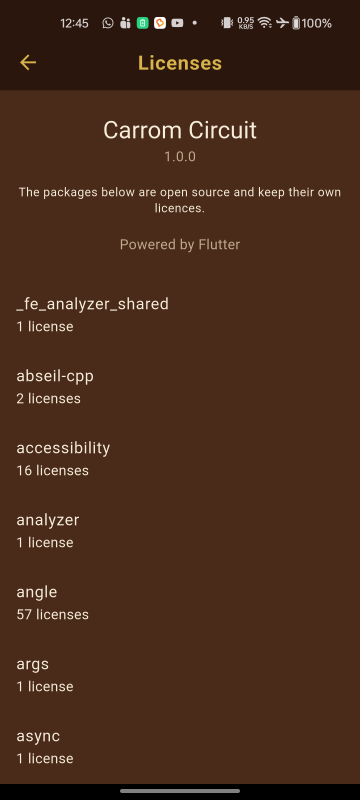
| Package | Version | Purpose | Licence |
|---|---|---|---|
| flutter | 3.41.6 | Application framework | BSD 3-Clause |
| flutter_localizations | SDK | Flutter's own translations | BSD 3-Clause |
| flame | 1.38.2 | Game loop and rendering | MIT |
| flutter_riverpod | 3.3.2 | State management | MIT |
| shared_preferences | 2.5.5 | Local persistence | BSD 3-Clause |
| flame_audio | 2.12.2 | Sound playback | MIT |
| google_mobile_ads | 9.1.0 | AdMob integration | Apache 2.0 |
| intl | 0.20.2 | Plurals and locale-aware numbers | BSD 3-Clause |
| cupertino_icons | 1.0.9 | iOS-style icon set | MIT |
The licences screen inside the app
Settings → Licences. It is Flutter's own LicensePage, which reads
LicenseRegistry — the list the build assembles from every package in the resolved
tree. That is around 110 Dart packages plus the engine's own native dependencies, not the nine credited
above, so it is considerably longer than this table and it cannot fall behind a dependency change.
Two things follow from it being Flutter's page rather than one of ours. It is already translated into
all thirteen languages, because the page title and the "N licenses" counts come from
GlobalMaterialLocalizations. And it takes your theme, so if you rebrand the app the licences
screen follows without being touched.
If you rebrand, the two things to change are in
lib/features/settings/licences_screen.dart: appName, and
kAppVersion — which is written out rather than read from the bundle, to avoid a package
and a platform channel for one line of text. test/app/licences_test.dart holds that
constant to the version: in pubspec.yaml, so bumping your version fails the
test rather than shipping a stale number on the page.
Upgrading dependencies. flutter_riverpod is held at 3.3.2 because 3.4.0 and
later require Dart 3.12. If you upgrade your Flutter SDK you can raise it with
flutter pub upgrade --major-versions, then re-run flutter test.
Fonts, sound effects and artwork shipped with the item are licensed for use in applications you build from this source. They may not be redistributed on their own or resold as a standalone asset pack.
Support
Support covers the item as supplied: answering questions about the included features, and fixing defects in the original source. It does not cover customisation work, third-party plugins you add, or problems caused by modifications to the code.
Before getting in touch, please run flutter doctor -v and include its output together with the
exact error message and the steps that produce it — that information resolves most reports immediately.
Contact details are listed on the item page.
Changelog
What’s new in 1.1.0 — 28 October 2026
Added
- A player profile. Players can set the name they are called by and pick a face — their own initials, or any of forty-eight drawn avatars. Both appear on the board and in the score panels.
- Thirteen languages: English, Bangla, Hindi, Arabic, Chinese, Russian, German, Turkish, French, Greek, Spanish, Brazilian Portuguese and Amharic, with a picker in settings and an option to follow the phone. Arabic lays the whole interface out right to left. Numbers are grouped and shaped the way each language writes them. See Languages for how to add or drop one.
- A Licences screen in settings, listing every open-source package in the build. It reads the licence registry directly, so it cannot fall behind a dependency change.
- Documentation on building for web, a FAQ, and the prerequisites you need before starting.
Changed
- The Android SDK levels are pinned explicitly in the Gradle build rather than resolving from whichever Flutter SDK is installed, so two machines cannot quietly build this project against two different Android SDKs.
- The game is easier to score in. The pocket radius went from 22.5 to 30 and the striker from 20.5 to 26, which roughly doubled how often a well-aimed shot drops.
- The aim guide also draws the path of the struck coin, not only the coin it would hit, which is the half that makes a cut shot aimable.
- The packaging script refuses to build an archive carrying an internal development reference or naming a path the archive does not contain.
Version 1.0.0 was the first release. The complete history, including every entry above in full and everything that went into 1.0.0, ships with the item as CHANGELOG.md and is also published here.